|
"Fifteen men on a dead man's chest. Yo ho ho and a bottle of rum! Arr, maties, welcome aboard me ship. I be intendin' to sail the Spanish main in search of treasure!" Well, that's what you would be saying if you were playing this game. Pirates is a cool game from Micropose originally released for the Commodore 64 computer. It was done by the legendary Sid Meier. (Taken from Wiesner, [14])
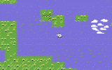
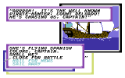
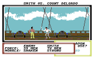
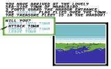
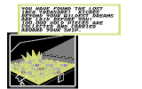
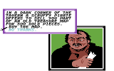
The game is 20 years old now. The original version I have is
on a copy protected 1541 floppy disk (game in english language, box in
german with purple color). As data on magnetic storage media is known
to be readable for only some years, I'm lucky my disk is still 100%
ok.
There are quite some versions of the game on the internet so far,
downloadable in D64 format. But the english disk versions I have seen
all originate from the "Eagle Software Inc" (ESI) crack made back in
the 1980s. It's an older version than mine (title screen says 132x01,
my version is 132x02). There are also a german and a polish disk version
on the internet. The german has a different versioning ("9.3.1991") and
other differences (e.g. additional files). The polish is only the
translated old ESI version. I have also seen some english tapes
(versions "132T02", "132T03"), but those can't be taken very serious
without the pictures (= no fun).
All versions have some annoying bugs. Moreover, you're lucky if you
get your hands on a D64 image without read-errors. So I think it's
about time to make a clean backup copy of my game disk, playable both
on the C64 and Vice emulator for Windows.
Hardware and Software requirements:
You will need a C64 (PAL or NTSC), connected to two 1541
disk drives with the usual serial cables (one drive ID set to 8, the
other set to 9), and a Windows PC (2000/XP) equipped with a cable for
connecting to one of the 1541s. I suggest a simple XA1541 cable or
XAP1541 parallel cable for this connection. As the minimum required
software I suggest "nibtools 0.5.1" copy program (if you have the
XAP1541 parallel cable and a 1541 with a parallel port hardware addon),
"opencbm 0.4.0" utilities and driver, "GUI4CBM4WIN 0.4.1" graphical
Windows application for "opencbm v0.4.0", "64Copy 4.20" Norton Commander
like file handling tool, "WinVice 1.22" C64-emulator and
"UltraEdit 13.20" as text/hex editor (all software for Windows 2000/XP).
So turn on your C64, take out your dusty Pirates disk and put it
into your 1541 floppy drive. Type LOAD"TITLE",8,1
at your C64's command prompt and the game will autostart. But what's
going on exactly?
We will now first make a simple (non working) copy of both disk sides
into D64 files under Windows 2000/XP so we can start our analysis.
There are two possible ways:
(A) If your 1541 has a parallel port (hardware addon) and you
have a XAP1541 parallel cable (other parallel cables may also work):
Connect your 1541 (drive ID 8) to your PC using the XAP1541 parallel
cable (turn them off before connecting!) and run instcbm.exe
from "opencbm 0.4.0" to start the driver. Now make sure your original
Pirates disk is in the 1541 drive, open a Windows command shell (cmd.exe)
and change to the "nibtools 0.5.1" directory. Then type in
nibread -E36 side1.nib to copy the whole disk side
(Ending Track 36). A nibconv side1.nib side1.d64
will convert it into the necessary D64 file format. Repeat this with the
backside of your Pirates disk. Finally run instcbm -r to
unload the driver. You should now have two D64 files: side1.d64 and
side2.d64, each 175.531 bytes in size.
Most Tracks on both disk sides have a special format, so nibread will
show many sector errors (check the nibread logfiles). The following
Tracks should be readable by the normal Kernal routines: Tracks 1-6 on
side 1 (only Track 4 has errors on Sectors 5,7,9,14,15,17,19), Tracks
1-3 on side 2, Track 9 on side 2 (only Sectors 0-3 are ok) and the
directory Track 18 of both disk sides (but there are errors on Sectors
11,14,17 on side 1 and 5,8,11,14,17 on side 2). This is ok.
(B) If your 1541 has the usual serial port and you have a
XA1541 cable (other cables may also work):
Connect your 1541 (drive ID 8) to your PC using the XA1541 cable (turn
them off before connecting!) and run instcbm.exe from
"opencbm 0.4.0" to start the driver. Now put your original Pirates disk
into the 1541 drive, open a Windows command shell (cmd.exe) and change
to the "opencbm" directory. Then type in
d64copy -e 3 8 side1.d64 to copy Tracks 1-3 and
d64copy -s 18 -e 18 8 side1.d64 for Track 18. Repeat this
with the backside of your Pirates disk. Finally run
instcbm -r to unload the driver. You should now have two
D64 files: side1.d64 and side2.d64, each 174.848 bytes in size.
The "d64copy.exe" console output will show some read errors on Track 18
(see above "nibtools" copy guide for a list). This is ok.
The game will not run from those D64 images, but they'll be
sufficient for our analysis now.
The following Figure #1 shows how your directory on "side1.d64" will
essentially look like (use "UltraEdit" to hex-edit the file). The
article "D64 (Electronic form of a physical 1541 disk)" [1] has
details on the D64 disk layout and directory structure.
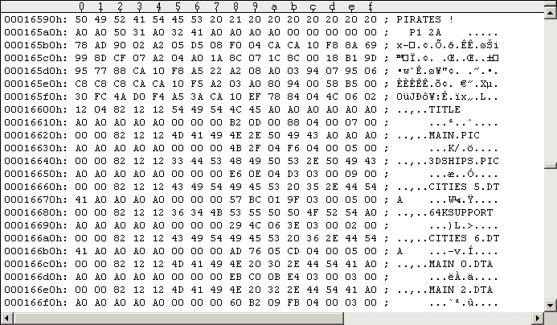
Keep that "strange looking garbage" at $165B0-$165FF in mind. You will notice that (nearly) all files on the disk point to Track 18, Sector 18. It's located at $17700:
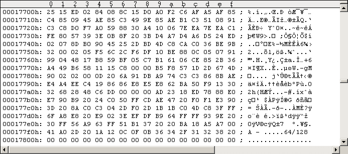
So by loading (almost) any file, there's the same program being loaded
to memory location $02ED ($17702/$17703 lo-hi order). I'll call it the
fastloader from now on. To find out what it's doing start WinVice, enable
"True Drive emulation" (Options - True Drive emulation) and attach drive 8
to "side1.d64" (File - Attach disk image - Drive 8). Enter WinVice's
Monitor (File - Monitor, or Alt+M), open the Disassembly window, scroll to
02ED and left-click on that line to set a breakpoint (whole line will be
marked red). (Alternatively you may enter break 02ed
in the monitor window to set the breakpoint.) Now exit the Monitor
(File - Exit, or x at the Monitor's command prompt)
and type in LOAD"TITLE",8,1 at the normal C64 prompt.
WinVice's Monitor will pop-up again and you will see the following windows
in Figure #3 (turn on disassembly, registers and console window). Obviously
WinVice breaked execution at $02ED location (our breakpoint), right before
our program executes its first command. You may enter
m 01f6 01ff ($100+SP+1=$01F6) and m 0000 00ff
to look at the current stack and Zeropage. You will find an excellent
reference of the C64's Zeropage entries and Kernal Routines in
"AAY64 - All_About_Your_64 - Online Help" [3].
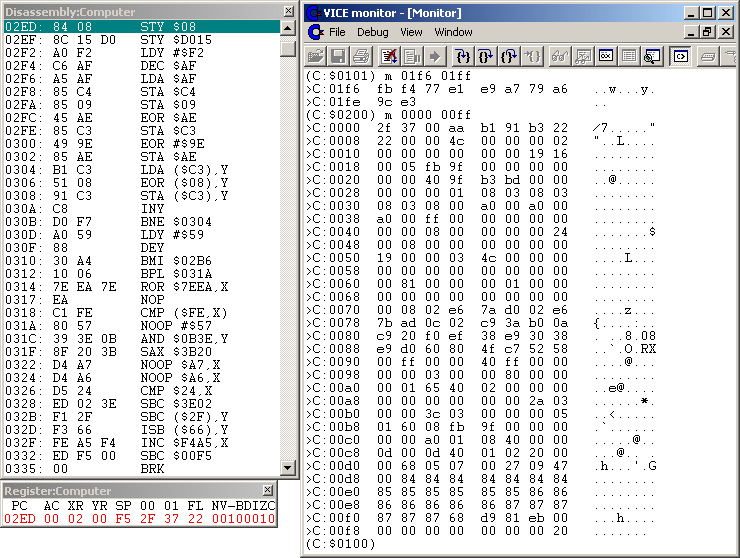
Explanation: Our program gets loaded to memory by the standard
Kernal load routine $FFD5 (Load RAM From Device), starting at memory
location $02ED (the load address of our program). While reading more
bytes from 1541 disk to memory and storing them successively to memory,
the Kernal load routine overwrites $0328/$0329 at some time (Kernal
Run/Stop Vector). The Kernal load routine will call to the address at
exactly that location each time a byte of our program is read from the
1541 drive. Default is a call to $F6ED routine, which checks if the
Run/Stop key got pressed by the user to interrupt the loading of the
file. Now it comes: $0328 remains unchanged (overwritten by $ED), next
$0329 is set to $02, so the Run/Stop Vector then points to $02ED. The
next call of the Kernal load routine to the Run/Stop Vector then
executes our program at $02ED! Nice autostart trick!
To speed up this tutorial a bit I will only summarize what our code at
$02ED is doing now. "Step-over" (Debug - Step-over) and you will see,
it is very simple! The loop $0304-$030B decrypts the code at
$031A-$0327, see following Figure #4.
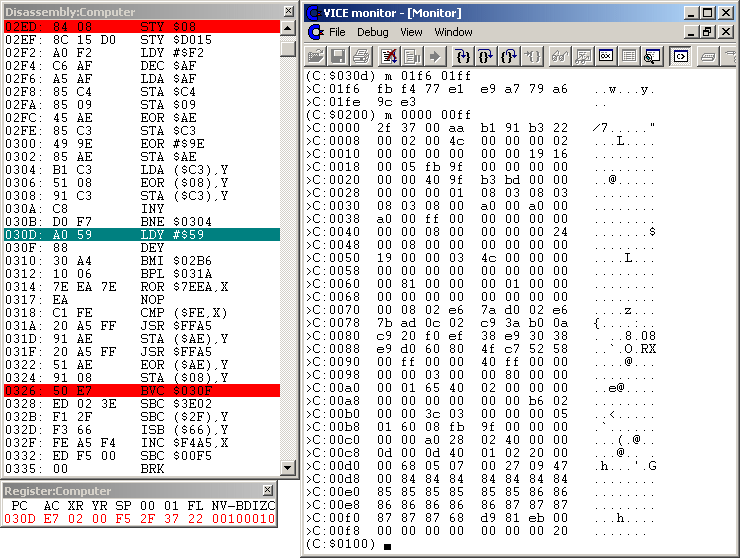
The now decrypted code is again a loop that continues the file
loading process (our LOAD"TITLE",8,1) that got
"interrupted" by the above misdirected call to the Run/Stop Vector. It
uses calls to $FFA5 (Handshake Serial Byte In) to read and decrypt
(backwardly) the rest of the program's first sector to $0200-$0258
("$0200 routine") and $02B6-$030E ("initial $02B6 routine"). Then the
$0310-BMI branches execution to $02B6.
You may skip that whole reading+decrypting simply by setting a breakpoint
to $02B6 (left-click line 02B6 and it will be marked red) and exit the
Monitor (File - Exit). WinVice will pop-up again and you will see the
following windows in Figure #5 (notice the stack, Zeropage and that special
$02EF-$0336 memory location dumps).
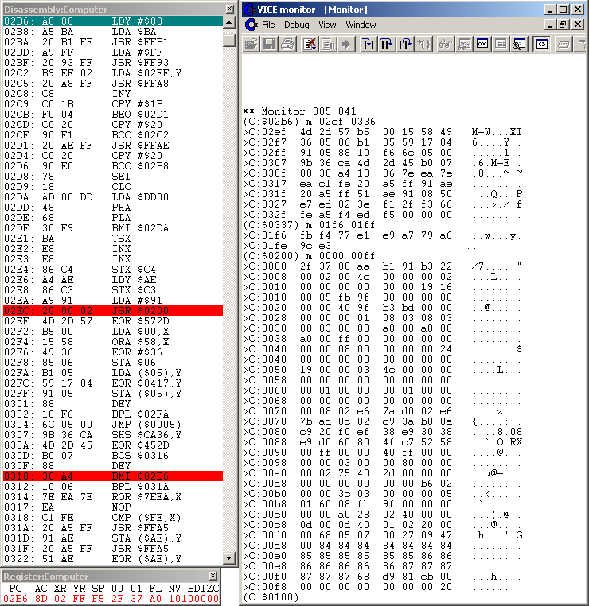
The code at $02B6-$02D6 sends 2 commands to the 1541 drive. They're
each initiated by calls to $FFB1 "Command Serial Bus LISTEN" and $FF93 "Send
SA After Listen". The loop will send either command using $FFA8
"Handshake Serial Byte Out" byte-by-byte to the 1541. Then the
$FFAE "Command Serial Bus UNLISTEN" is called.
First command sent to the 1541 is "M-W" (memory block $02EF-$0309 =
$1B bytes). The second is "M-E" (memory block $030A-$030E = 5 bytes),
which will start the fastloader in 1541 memory. You can see both
commands in the memory dump in above Figure #5.
Explanation: If you look closer at the memory dump of the "M-E"
command you will notice the directly following $07B0 address. This means
the 1541 will execute code at $07B0 in its own memory. Currently Track 18,
Sector 0 is loaded into 1541's memory at $0700-$07FF, and $07B0-$07BF
(normally unused =$00, except for 40 track extended format) is that
strange looking garbage you already noticed before (Figure #1). You may
verify this in WinVice's Monitor: enter dev 8: to
switch to 1541 memory mode, m 0700 07ff for memory
dump, d 07b0 for disassembly and finally
dev c: switches back to the C64.
The "drive-code" executed at $07B0 is the fastloader (it's counterpart
in 1541 memory to be more precise). What's happening there is beyond
the scope of this tutorial. But if you're interested, you
may trace through the code there by simply switching WinVice's
disassembly window to Drive 8 (right-click into disassembly window).
That 1541 tracing is something you cannot do on the C64 with the Retro
Replay Cartridge and Cyberpunx ROM.
You will find an easy intro on this "1541 Direct Access Programming" in
the (german language) article "Direkte Programmierung der Floppy 1541"
[8] and more details in "Inside Commodore DOS" [2].
"AAY1541 - All_About_Your_1541" [4] is an invaluable reference for the
1541's Zeropage and 1541's Kernal routines. And the "Kracker Jax
Revealed Trilogy" [9] has technical details on the Rapidlok
copy protection for the interested reader.
Back to the C64's flow of execution (in WinVice): The $02DA-$02DF loop
now waits on the $DD00 CIA2 "Data Port A" for some signal from the started
fastloader in the 1541. When the signal is received, the next step
is at location $02EC the call to $0200. Look at the disassembly of
the $0200 routine in the following Figure #6.
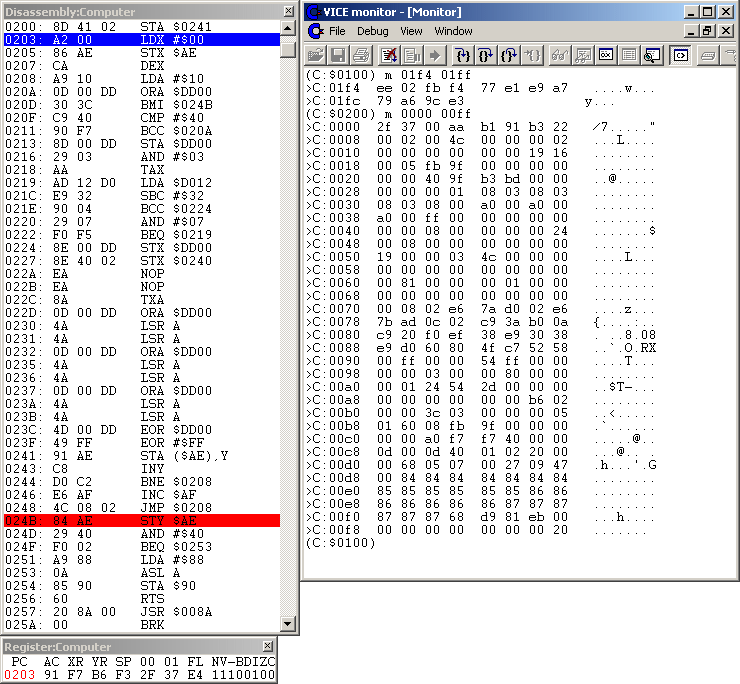
The $0200 routine is designed for 2 purposes (short summary):
I'll call them the "$91 memory load mode", and the "$60 control
mode" ($60=RTS assembler opcode). This is the actual data transfer
routine, it communicates with the 1541 through the $DD00 CIA2
Data Port A (Serial Bus in this case). The $91 and $60 determine where
this routine ends ($0200-STA $0241). Previous Figure #6 shows the routine
in "$91 memory load mode" (because [$0241]=$91): it reads data in a
loop, stores it successively to memory (address pointer $AE/$AF) and
finally $020D-BMI branches to the end.
If the $0200 routine is called in "$60 control mode" a return opcode
is placed directly behind the actual byte loading code ([$0241]:=$60).
So the loop code for reading multiple data bytes is avoided:
Only 1 data byte is read from the 1541 and returned to the calling
routine in register AC.
If you're interested in the $DD00-transfer you can find information
in the german language article "Bits der Reihe nach (Thema: serieller Bus,
Programmierung der 1541)" [16].
Ok, back to the flow of execution: As the $0200 routine is currently
called with register AC=$91, we're in "$91 memory load mode". And as
it's called for the first time, it will now $DD00-transfer the "general
loading loop" from the 1541 to $02EF-$0312 memory location (and restore
the original Kernal vectors at $0314-$0329) as well as the 2-part
"exit-routine" to memory locations $02B6-$02E0 and $02E1-$02EC. When
finished transferring (the $74=116d bytes) it will return to address
$02EF, right behind from where it was called (the memory got overwritten
with the new routines, so don't wonder where's the $0200 call).
By the way: Those Kernal vectors get "restored" with default addresses.
So if you have a modified Kernal with different vector addresses you may
get into trouble here, because chances are good that the vectors will
point to invalid code locations. The copy program we'll develop in
Chapter 2.2 will try to compensate this. You may look into
"AAY64 - All_About_Your_64 - Online Help v0.64" [3] for the standard
Kernal vectors (see Zeropage entries).
Important PAL/NTSC notice: In the above Figure #6 you see the
PAL version of the fastloader. In the NTSC version of the game the two
"NOP"s at $022A/$022B ($EA$EA) are exchanged by one "ASL $C3" command
($06$C3).
The problem is that the 1541 CPU runs at 1 Mhz, but the C64 runs either
slower (PAL: 0.9852484 MHz) or faster (NTSC: 1.022727 MHz). This has to
be taken into account in order to read the correct data bytes from the 1541.
The 1541 sends the data bytes at a specific rate without waiting for
synchronization. The difference between correct PAL and NTSC timing is 1
clock cycle on the C64 side (the disk drive code is the same!). So if you
put a PAL disk into a C64 running at NTSC speed, you have to slow down the
loading code by 1 CPU cycle. This is done here by exchanging the two NOPs
with one $06-ASL: A NOP instruction needs 2 CPU cycles (2 NOPs = 4 CPU cycles)
and the $06-ASL instruction needs 5 CPU cycles. And if you put a NTSC disk
into a C64 running at PAL speed, you need to speed up the loading code by
exchanging the $06-ASL with two NOPs. You can use any instructions you want
to adjust the timing. Of course, you need to make sure the exchanged
instructions make some sense in the context of the fastloader (or are
some sort of no-operation as the NOP).
This is exactly the reason why a Pirates disk is not running on the
"wrong" C64: because the timing is incorrect, mostly random junk bytes are
read into the C64's memory. You have to explicitly tell WinVice the
correct mode before starting this analysis (Options - Video standard): if
there are 2 NOPs at $022A/$022B you have to enable "PAL-G" and if there's
a "ASL $C3" you have to enable "NTSC-M". Unfortunately there's no hint on
the Pirates disk label or the box saying if it's PAL or NTSC.
You may want to look into "2-bit transfer protocol in an IRQ-loader" [15]
for further information and "AAY64 - All_About_Your_64 - Online Help v0.64"
[3] for the CPU cycle counts of the C64's instruction set.
In the following Figure #7 you will see the "general loading loop"
$02EF-$0312 and the 2-part "exit-routine" $02B6-$02E0, $02E1-$02EC (and the
$02ED Basic "RUN"-token ($8A)).
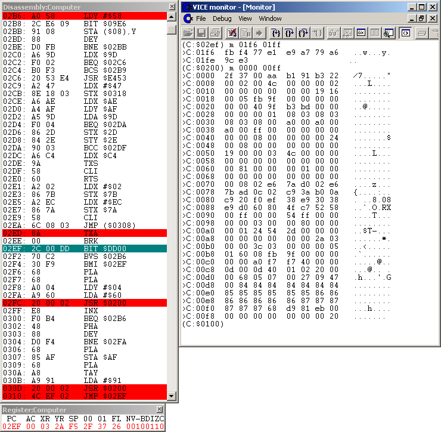
Ok, we just returned to $02EF. It turns out that our copy of Track 18 is
not sufficient for tracing through the following calls to $0200. So I will
briefly summarize what's happening now.
LOAD"...",8,1. They
may even overlap each other. I've seen that if multiple files are getting
in, they all have a return-address of $FFFF, except the last one having
a legal one.LOAD"TITLE",8,1 we've fast-loaded the
copy-protected "TITLE" program. There is only one cycle of the "general
loading loop", reading the program to memory location $0801. It then
gets autostarted through exit-routine #2 (it's a Basic program). So
the game starts.We want to get a clean Pirates disk image in this Chapter. The idea
is to use the fastloader to load a protected file into C64 memory
and then simply save it. By looping over a number of filenames we can
filecopy a whole protected disk.
From the Analysis in Chapter 1 we know the exact code locations of
the running fastloader where we can intercept and
get the necessary address information of a file in memory.
That means we will inject code into the running fastloader to
grab that address information on-the-fly and taking care not letting
the fastloader get to know there's something going on. Doing this in
a loop we have to ensure the loaded files do not get autostarted
or overwrite our own code, we must remain in control. We also need
filenames. To keep things comfortable, we will use two 1541 disk
drives: the files will be fast-loaded from drive 8, and saved to
drive 9. If you have no second drive, it's possible to rewrite the
code to change output to drive 8 and switch disks each time (after
waiting for e.g. a keypress).
I organized our project as follows: we need an injector routine grabbing
the addresses (Chapter 2.1). Second we need a loop over the filenames that
loads the files and saves them afterwards (Chapter 2.2).
We begin with LOAD"TITLE",8,1 at C64's Basic
prompt now, looking for the moment only how the code injection works.
You may use the Injector independently with the Freezer of your
Retro Replay Cartridge (with $DD00 bugfixed ROM) to manually dump the
files. In Chapter 2.2 we will integrate it in a loop that loads all
(protected) files from disk.
We know from our Analysis: the Kernal load routine loads the fastloader
to memory byte-by-byte, starting at its load address $02ED with current
position in $AE/$AF. The Run/Stop Vector at $0329 is called each time
a byte got written to memory, and overwriting it to point to $02ED will
autostart the fastloader.
As we don't want to break the loading process, there's really no need
checking for Run/Stop. So if we misdirect the $0329 Vector to our Injector,
we can manipulate the fastloader while its body gets loaded
into memory. We can do this manipulation any time we want, but before
$0329 gets written to, of course. A good time would be when $0328 is going
to be overwritten, when the essential body of the fastloader is in memory:
this is when $AE has a value of $28 (as we are exclusively playing with
our fastloader, it's sufficient to check the lo-address of where the
data bytes get written to). So take a look at the following code.
Run/Stop from "Load RAM From Device" ($FFD5) comes in
=====================================================
Purpose: Fastloader is loaded to $02ED..$0329. On writing $0328,
inject misdirection to our handler.
08ED A5 AE LDA $AE
08EF C9 28 CMP #$28 ; $0328 to be written?
08F1 D0 1B BNE $090E
08F3 A9 22 LDA #$22 ;
08F5 8D 11 03 STA $0311 ; $0328 to be written,
08F8 A9 4C LDA #$4C ;
08FA 8D 34 03 STA $0334 ; misdirect $0310-BMI to $0334-$0336,
08FD A9 10 LDA #$10 ;
08FF 8D 35 03 STA $0335 ; inject jump to $0910 handler below,
0902 A9 09 LDA #$09 ;
0904 8D 36 03 STA $0336 ; restore $0329 Run/Stop Vector,
0907 A9 F6 LDA #$F6 ;
0909 8D 29 03 STA $0329 ; and clear the zero flag.
090C C9 55 CMP #$55 ;
090E 60 RTS ; continue "perform [load]".
As you can see I chose to locate our Injector at $08ED. Of course, we
have to set $0328/$0329 to point to $08ED before we start the above
loading of "TITLE": a POKE809,8 at the C64's Basic prompt
will do the job for this time ($329=809d).
As long as $0328 does not get overwritten, we simply return (RTS) and
continue the Kernal "perform [load]".
We now want to pass the moment the $0200 routine and initial $02B6 routine
are ok in memory. This is when the 2-byte $0310-BMI branches execution
to $02B6. We cannot use a 2-byte-branch to our handler at $0910 as it's
too far away. A glance at "AAY64 - All_About_Your_64 - Online Help" [3]
documentation of the Extended Zeropage reveals that $0334-$033B is unused
memory. So we misdirect $0310-BMI to $0334-$0336 ($08F3/$08F5 instructions
in the code window above) and place a 3-byte-jump there to our handler
below.
[ It's not really necessary to restore the Run/Stop Vector with it's
original value $F6, but we do it here. $F6 is the default value but it
may be different on systems with a modified Kernal. So the "LDA $F6"
assembler command gets updated (overwritten) later in Chapter 2.2 with
the correct value for your system.
We also have to clear the zero flag (e.g. CMP #$55), as we don't want
to signal a Run/Stop. Then we return (RTS) to continue the Kernal
"perform [load]". ]
Now we only have to wait until our $0910 handler in the code window
below gets executed.
Misdirection $0310-BMI comes in
===============================
Purpose: init #load,SP. Misdirect $024B (right after the "general
loading loop" and the 2 "exit-routines" got loaded + decrypted).
0910 A9 00 LDA #$00
0912 8D EB 08 STA $08EB ; #load:= 0 (number of so far loaded shadow files)
0915 A9 E9 LDA #$E9
0917 8D EC 08 STA $08EC ; init SP (top of stack is $08E9, decreasing)
091A A9 10 LDA #$10
091C 8D EA 08 STA $08EA ; $1000 = load address of first file coming in
091F EA NOP
0920 AD A6 02 LDA $02A6 ; $02A6 Flag: TV Standard: $00 = NTSC, $01 = PAL
0923 F0 0B BEQ $0930
0925 A9 EA LDA #$EA ; PAL system detected
0927 8D 2A 02 STA $022A ; 2 CPU cycles per "NOP" operation = 4 CPU cycles
092A 8D 2B 02 STA $022B ;
092D 4C 3B 09 JMP $093B
0930 A9 06 LDA #$06 ; NTSC system detected
0932 8D 2A 02 STA $022A ; "ASL $C3" operation = 5 CPU cycles
0935 A9 C3 LDA #$C3 ;
0937 8D 2B 02 STA $022B ;
093A EA NOP
093B A9 4C LDA #$4C ;
093D 8D 4B 02 STA $024B ;
0940 A9 4F LDA #$4F ; misdirect $024B to handler below.
0942 8D 4C 02 STA $024C ;
0945 A9 09 LDA #$09 ;
0947 8D 4D 02 STA $024D ;
094A EA NOP
094B 4C B6 02 JMP $02B6
For the moment just keep in mind that "#load:= 0", "init SP" and that
"$1000 = load address" stuff. It's the initialization of our address
stack. I'll go into detail later.
The $0920-$0937 code is the PAL/NTSC detection. If a PAL C64 system is
detected ([$02A6]=$01), 2 NOPs have to be placed inside the fastloader
at $022A/$022B location (see Chapter 1 - Analysis). On NTSC C64 systems
([$02A6]=$00) the "ASL $C3" will be placed at that location. This makes
sure that the fastloader will work under any circumstances. The $02A6
value will be determined and set in Chapter 2.2 by a selfmade PAL/NTSC
detection routine. You may check "AAY64 - All_About_Your_64 - Online Help" [3]
on this $02A6 flag.
Ok, back to the flow of execution: Now that the $0310-BMI should have
branched to $02B6, the $0200 routine and the initial $02B6 routine are
ok in memory. The next relevant part of the fastloader's code is the
first call to the $0200 routine in "$91 memory load mode" at $02EC. This
routine will read and decrypt the "general loading loop" (amongst others)
which we want to get our hands on as we can grab the files' loading
address information there.
If we intercept that $0200 routine just before it returns, we are
free to do whatever we want with the "general loading loop" in memory.
So we place a jump to our handler below at code address $024B (remembering
the overwritten original bytes of course). Then we continue execution
at $02B6 and simply wait until execution passes to our handler
(see code window below).
Misdirection $024B comes in
===========================
Purpose: misdirect $0309 (pre load, start address + RTS on stack/registers)
and $0310 (load complete, end address on stack) to handlers below.
094F A2 84 LDX #$84 ;
0951 8E 4B 02 STX $024B ;
0954 A2 AE LDX #$AE ; restore code at $024B location.
0956 8E 4C 02 STX $024C ;
0959 A2 29 LDX #$29 ;
095B 8E 4D 02 STX $024D ;
095E EA NOP
095F A2 32 LDX #$32 ;
0961 8E 01 03 STX $0301 ; misdirect $0301 to $0334..$0336-lock
0964 A2 4C LDX #$4C ;
0966 8E 34 03 STX $0334 ; jump-lock to prevent autostart or so
0969 A2 34 LDX #$34 ;
096B 8E 35 03 STX $0335 ; (needs further stack analysis if occurs)
096E A2 03 LDX #$03 ;
0970 8E 36 03 STX $0336 ;
0973 EA NOP
0974 A2 4C LDX #$4C ;
0976 8E 09 03 STX $0309 ; misdirect $0309 to address logging handler below
0979 A2 93 LDX #$93 ;
097B 8E 0A 03 STX $030A ; (4 control bytes read: start address + RTS)
097E A2 09 LDX #$09 ;
0980 8E 0B 03 STX $030B ;
0983 EA NOP
0984 A2 B6 LDX #$B6 ;
0986 8E 11 03 STX $0311 ; misdirect $310 to address logging handler below
0989 A2 09 LDX #$09 ; ($0200-load complete: end address on stack)
098B 8E 12 03 STX $0312 ;
098E EA NOP
098F 4C 4B 02 JMP $024B
OK, we've intercepted the $0200 routine just before it returns. The
"general loading loop" and the 2 "exit-routines" are ok in memory now.
We first have to restore the 3 original bytes of code at the end of
the $0200 routine ($024B-$024D). Then we place interception jumps to
our address logging handlers at the neural positions of the "general
loading loop".
As stated earlier in error-handling, the $0300-BEQ may lead to an
unexpected exit. So we dead-lock it: we manipulate its target address
to point to the known $0334-$0336 area, where we place an endless jump
onto itself. If something's wrong, remember that.
Second interception to place is a jump to the $0993 address logging
handler below: we place it at $0309-$030B (remembering the original
code there). It will log the files' start addresses.
Third we place a jump to our $09B6 address logging handler: we overwrite
the 3-byte existing jump at $0310-$0312 to point to our handler (here we
only have to remember where the original jump goes to: $02EF).
We're now in full control of the fastloader's loading process. We
now continue execution at $024B and only have to wait until a file
gets loaded, and then store the start/end addresses somewhere. So take
a look at the handler logging the start addresses in the code window
below.
Misdirection $0309 comes in (4 control bytes read)
==================================================
Purpose: get start address where file gets loaded to, and log it to
our stack for later dump. Change first start address to $10xx.
0993 EE EB 08 INC $08EB ; inc(#load), the incoming count
0996 AC EC 08 LDY $08EC ; get SP
0999 99 00 08 STA $0800,Y ; store original start hi-addr
099C 88 DEY
099D AD EA 08 LDA $08EA ; get next >>available<< start hi-addr,
09A0 85 AF STA $AF ; copy it as load address to $AF,
09A2 99 00 08 STA $0800,Y ; and store it to our stack (for later dump).
09A5 88 DEY
09A6 68 PLA ; orig. statement
09A7 99 00 08 STA $0800,Y ; store start lo-addr
09AA 88 DEY
09AB 8C EC 08 STY $08EC ; save SP
09AE A8 TAY ; orig. statement
09AF A9 91 LDA #$91 ; orig. statement
09B1 EA NOP
09B2 4C 0D 03 JMP $030D
The $0993 handler above will retrieve and store the start address of the file currently getting loaded. We have to store this information somewhere: I chose the location right before $08ED (start of our Injector). As we have to expect several incoming files, I constructed a stack: the number of so far loaded files is stored at $08EB (initially set to zero, remember?), our current stack pointer is stored at $08EC (initially pointing to the first free place: $08E9, remember?), and the next available load hi-address for an incoming file is stored at $08EA (initially pointing to $10xx, remember too?). Our initial stack looks as follows.
08EC: E9 (our stack pointer SP: 08E9)
08EB: 00 (number of files on stack)
08EA: 10 (next available load hi-address)
-----------------------------------------
08E9: <--SP
We know from our Analysis that the start address of a file to be loaded
is on the stack at fastloader's code location $0306. As we intercept
at $0309, the hi-address just got pop'ed from stack into the AC register
and written to $AF. The lo-address is now the next/top value on the
stack. As we know where the values are, we can now make use of them.
(Of course, we have to remember to execute the original statements we
overwrote.)
The start address $yyxx of the first incoming program is relocated to
$10xx (for simplicity only hi-address changes to $10, we don't change
lo-address). But we need to remember the file's original start
address for later saving: we first store the original hi-address
to our stack (and decrement SP by 1). Then the relocated
start address gets stored: first hi-address (+ decrement SP), then
lo-address (+ decrement SP). The original and relocated hi-addresses
get stored to our stack even if they're equal.
Example: Imagine the current file wants to get loaded to $0801.
So we store the original $08 to the stack first, then we store $10 to
our stack, followed by its lo-address $01. Of course, the SP has to
be decremented each time. The file gets effectively loaded to address
$1001 instead of $0801. See below how the stack looks now.
08EC: E6 (our updated stack pointer SP: 08E6)
08EB: 01 (number of files that came in so far)
08EA: 10 (next available load hi-address)
----------------------------------------------
08E9: 08 (original hi start-address)
08E8: 10 (relocated hi start-address)
08E7: 01 (original lo start-address)
08E6: <--SP
If we change the start address, we have to tell it the fastloader: we store it (initially $10) at $AF, that's it. After we've logged the start address to our stack and executed the overwritten original code, we return execution to $030D. The fastloader will now call the $0200 routine in "$91 memory load mode" loading the file to the relocated start address. When it's finished loading, our $0310 interception will redirect execution to our $09B6 address logging handler below.
Misdirection $0310 comes in (after $0200-load complete)
(this routine does not change carry flag value!)
=======================================================
Purpose: $0200-load is complete, copy end address from $AE/$AF to our
stack for later dump. Increment stack-file-counter, as we are in a loop.
Copy original RTS-address on stack to our own stack and change it to
prevent autostart in $02B6 exit-routines
09B6 AA TAX ; save AC register value
09B7 AC EC 08 LDY $08EC ; get SP
09BA A5 AF LDA $AF ; get end hi-addr,
09BC 8D EA 08 STA $08EA ; store to $AF and increment $AF
09BF EE EA 08 INC $08EA ; (for next available start address)
09C2 99 00 08 STA $0800,Y ; store end hi-addr
09C5 88 DEY
09C6 A5 AE LDA $AE ; get end lo-addr
09C8 99 00 08 STA $0800,Y ; store end lo-addr
09CB 88 DEY
09CC 68 PLA ; get original (lo) RTS-address
09CD 99 00 08 STA $0800,Y ; and copy it to our stack
09D0 88 DEY
09D1 68 PLA ; get original (hi) RTS-address
09D2 99 00 08 STA $0800,Y ; and copy it to our stack
09D5 88 DEY
09D6 8C EC 08 STY $08EC ; save SP
09D9 A9 02 LDA #$02
09DB 48 PHA ; set new RTS-address: $02DF
09DC A9 DF LDA #$DF ; and push it onto stack
09DE 48 PHA
09DF 8A TXA ; restore AC register value
09E0 EA NOP
09E1 4C EF 02 JMP $02EF
At fastloader's $0310 code location, $AE/$AF will hold the end address
(+1) of the file in memory. So our $09B6 handler above simply grabs it and
stores it to our stack: first the hi-address from $AF, then the lo-address
from $AE. As we have to assume more files coming in, we increment the
hi-part by 1 and store it to $08EA. The next incoming file will use that
value for its relocated hi load-address, so the files follow each other
without wasting too much memory.
As we don't want the loaded file to be autostarted (imagine what may
happen if we let a loaded program get executed before we dump it), we
have to edit the return-address (located on top of the cpu stack) before
we jump back: we simply pull the 2 bytes from the cpu stack, copy it
to our stack (first lo-address, then hi-address) and push $02DF (first
hi-address $02, then lo-address $DF) in exchange.
Example: Imagine the file's end address in memory is $09FF and it's
RTS-address is $02E0. Then see below how the stack would look like now.
08EC: E2 (our updated stack pointer SP: 08E2)
08EB: 01 (number of files that came in so far)
08EA: 12 (next available load hi-address)
----------------------------------------------
08E9: 08 (original hi start-address)
08E8: 10 (relocated hi start-address)
08E7: 01 (original lo start-address)
08E6: 11 (hi end-address)
08E5: FF (lo end-address)
08E4: E0 (original (lo) RTS-address)
08E3: 02 (original (hi) RTS-address)
----------------------------------------------
08E2: <--SP
With the $09E1-jump execution is passed back to the fastloader. The
$02EF-$02F4 loop then waits again for the 1541 fastloader signalling
if there is more data to be transferred.
That's it. As we're still in full control of the "general loading loop",
the next file can come in. Its address information will be stored
at the last stack pointer's location, successively decreasing it.
With our enabled Injector in memory, we can fast-load a single file
from the Basic prompt, edit its start address and log the boundary
addresses as well as its return-address to our address stack. With
this address stack we can also handle multiple files coming in, and
they won't overwrite each other in memory. By editing the return
address on the stack we can prevent a file from getting autostarted,
so we'll simply return to the Basic prompt after loading has finished.
Now we are ready to loop over a number of files.
There's one detail concerning the Injector I didn't tell you so far:
we wanted to take care not letting the fastloader get to know there's
something going on. This especially means we must not corrupt the
fastloader's loading process. So by taking some glances at the
fastloader's code and our injected handlers you'll notice that I
always saved the original register values - that which are crucial for
the fastloaders ongoing work - on entering the handlers, and restoring
them on passing execution back to the fastloader. The $09B6
end/RTS-address logging handler must also maintain the status of the
carry flag from the $0200 routine as it's crucial for the flow of
execution in the $02B6 exit-routine.
We should also be happy that the Injector actually works. As outlined
in Analysis the timing between the SEI/CLI commands is crucial for the
operation of the fastloader. So be careful not to inject too much
or "very" time-consuming code if you want to try something.
In this paragraph we will loop over a number of filenames, load each
file and save it afterwards using the memory addresses on our address
stack (collected by our Injector). For each file there may come in
multiple files, so we'll append numbers to the filename on
saving if necessary.
Ther (german) article "Floppyprogrammierung - von (A)ssembler bis (B)asic"
[21] gives an overview over the file handling in assembler.
We'll start with a screenshot of the working Injector-Filecopy-Program,
as a picture tells more than 1000 words (the 73 is simply my internal
build number).
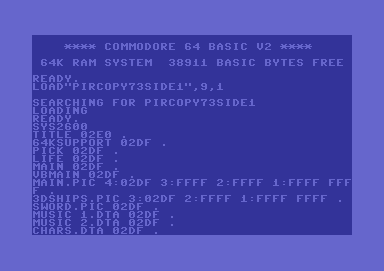
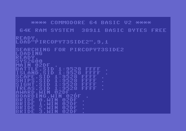
We locate our filecopy loop code at memory location $0A28, so we can
start it with a SYS2600 from the C64's Basic prompt.
Be sure you restart the C64 before running this copy program (turn
power off and on) to reset the memory (especially the CHROUT and Run/Stop
Kernal vectors).
We have 2 sets of filenames: one for each Pirates disk side, located
at address $0D00, so we have to switch between them.
The following code window shows the whole main program loop. It's
really simple and really short.
Program entry point (sys 2600)
==============================
Purpose: entry point from BASIC prompt to start file reading and dumping
in a loop. start program here with "sys 2600" (after a C64 restart)!
0A28 20 20 0C JSR $0C20 ; PAL/NTSC detection
0A2B 20 80 0A JSR $0A80 ; Filename pointer initialization, save some Kernal vectors
nextfile:
0A2E 20 A0 0A JSR $0AA0 ; Get/copy/print next filename from $0D00+ to $033C/screen
0A31 AD 3C 03 LDA $033C ; len(filename)
0A34 D0 01 BNE $0A37
0A36 60 RTS ; len(filename)=0, so no more files to read+dump. Return to BASIC.
0A37 20 D0 0A JSR $0AD0 ; Load "filename"
shadowloop:
0A3A 20 CC FF JSR $FFCC ; CLRCHN: restore output channel to screen
0A3D A9 20 LDA #$20
0A3F 20 D2 FF JSR $FFD2 ; CHROUT "_" (space)
0A42 AC 3C 03 LDY $033C ; len(original filename)
0A45 8C 3D 03 STY $033D ; len(temporary "shadow" filenames)
0A48 CE EB 08 DEC $08EB ; dec(#load)
0A4B 10 03 BPL $0A50 ; >=0 ?
0A4D 4C 5E 0A JMP $0A5E ; <0 -> address-stack empty -> finishloadfile
0A50 F0 03 BEQ $0A55
0A52 20 B0 0B JSR $0BB0 ; Append # for shadow files
0A55 20 D0 0B JSR $0BD0 ; Print RTS address
0A58 20 20 0B JSR $0B20 ; Create file and dump from memory
0A5B 4C 3A 0A JMP $0A3A ; -> shadowloop
finishloadfile:
0A5E 20 90 0B JSR $0B90 ; FinishLoadFile
0A61 4C 2E 0A JMP $0A2E ; -> nextfile
First, we determine if we're on a PAL or NTSC system (JSR $0C20)
as this is crucial for the fastloader. We'll examine the detection routine
after the other (more important) ones.
Next, the filename pointer gets initialized by JSR $0A80.
Zeropage location $FB/$FC is unused, so we use it as a pointer in/to the
current filename (see code window below). The filenames have to be
null-terminated, and the whole list of filenames must also be
null-terminated itself (i.e. 2 zeros after the last filename).
We also save the current/original Kernal CHROUT + Run/Stop vectors: we
copy those addresses directly into assembler commands used for
restoring them later in the $0AD0 LoadFile-Subroutine and the Injector
in Chapter 2.1.
Init-Subroutine:
0A80 A9 00 LDA #$00 ; init memory filename pointer
0A82 85 FB STA $FB ;
0A84 A9 0D LDA #$0D ; $FB/$FC to $0D00.
0A86 85 FC STA $FC ;
0A88 AD 26 03 LDA $0326 ; save original Kernal CHROUT + Run/Stop vectors
0A8B 8D FF 0A STA $0AFF ;
0A8E AD 27 03 LDA $0327 ; into the assembler commands at $0AFE/$0B03/$0B08/$0907
0A91 8D 04 0B STA $0B04 ;
0A94 AD 29 03 LDA $0329 ; for later restore.
0A97 8D 08 09 STA $0908 ;
0A9A 8D 09 0B STA $0B09 ;
0A9D 60 RTS
In the following code window you see the JSR $0AA0 subroutine: The current filename is copied from $0D00+ location to $033E and the length of the filename is stored to $033C. While the filename is copied, it will be output to the screen using $FFD2 "CHROUT" routine for user's convenience. If a file was read+saved, the execution passes to here again, to continue the loop with the next filename.
NextFile-Subroutine:
0AA0 A9 00 LDA #$00
0AA2 8D 3C 03 STA $033C ; len(filename):= 0
0AA5 A9 3E LDA #$3E ;
0AA7 85 AE STA $AE ; current filename will be copied to $033E,
0AA9 A9 03 LDA #$03 ; -> $AE/$AF.
0AAB 85 AF STA $AF ;
0AAD A0 00 LDY #$00 ; Y:= 0
0AAF EA NOP
0AB0 B1 FB LDA ($FB),Y ;
0AB2 F0 13 BEQ $0AC7 ;
0AB4 EE 3C 03 INC $033C ; copy current filename
0AB7 91 AE STA ($AE),Y ;
0AB9 20 D2 FF JSR $FFD2 ; from $FB/$FC=$0D00+
0ABC E6 FB INC $FB ;
0ABE D0 02 BNE $0AC2 ; to $AE/$AF=$033E
0AC0 E6 FC INC $FC ;
0AC2 E6 AE INC $AE ; and CHROUT it to screen.
0AC4 4C B0 0A JMP $0AB0 ;
0AC7 60 RTS
After returning from the above NextFile-Subroutine to our main routine
we check if the current/returned filename is legal. If the length is zero,
we've reached the end of the list of filenames (as it's terminated
by 2 zeros) and so we end our filecopy program by returning to the
Basic prompt ($0A36-RTS).
Else we have a valid filename at $033E and its nonzero length at $033C.
So we load the file ($0A37: JSR $0AD0, see following
code window).
LoadFile-Subroutine:
0AD0 A9 0D LDA #$0D ; misdirect Kernal CHROUT vector
0AD2 8D 26 03 STA $0326 ; to our $0B0D=RTS below.
0AD5 A9 0B LDA #$0B ; -> No screen output during Kernal load!
0AD7 8D 27 03 STA $0327 ;
0ADA EA NOP
0ADB A9 00 LDA #$00 ; our file number: #0
0ADD A2 08 LDX #$08 ; drive 8
0ADF A0 01 LDY #$01
0AE1 20 BA FF JSR $FFBA ; SETLFS
0AE4 AD 3C 03 LDA $033C ; len(filename)
0AE7 A2 3E LDX #$3E ; lo(@filename)
0AE9 A0 03 LDY #$03 ; hi(@filename)
0AEB 20 BD FF JSR $FFBD ; SETNAM
0AEE A9 08 LDA #$08
0AF0 8D 29 03 STA $0329 ; enable our Injector
0AF3 A9 00 LDA #$00 ; 0=load
0AF5 20 D5 FF JSR $FFD5 ; Load RAM From Device
0AF8 A9 00 LDA #$00
0AFA 20 C3 FF JSR $FFC3 ; CLOSE #0
0AFD EA NOP
0AFE A9 CA LDA #$CA ;
0B00 8D 26 03 STA $0326 ; restore Kernal CHROUT + Run/Stop vectors
0B03 A9 F1 LDA #$F1 ;
0B05 8D 27 03 STA $0327 ; to original address (values here modified
0B08 A9 F6 LDA #$F6 ;
0B0A 8D 29 03 STA $0329 ; by above commands $0A88-$0A9A).
0B0D 60 RTS
As we don't want the Kernal load routine output its loading
progress to the screen, we misdirect the CHROUT vector $0326/$0327
to point to a RTS (e.g. $0B0D) and restore it after closing the
file (setting the $9D Error-Mode-Flag to $00 would do the same, but
would influence the branches in the fastloader's $02B6 exit-routine).
Then we simply use the standard Kernal functions "SETLFS", "SETNAM"
and "Load RAM From Device", "CLOSE" to load the actual file (filename
at $033C location) and close it afterwards. Of course, we enable our
Injector before loading by setting $0329:= $08, so we don't have to
POKE this from the Basic prompt anymore. Finally we restore the
$0328/$0329 Run/Stop vector with the original address we saved earlier
at $0A94/$0A9A.
We initially saved the Kernal CHROUT + Run/Stop vectors in the $0A80
Init-Subroutine and restore them here after each file-load because the
fastloader overwrites them with "default" addresses which may be
invalid if you have a modified Kernal. The Kernal vectors could also
have been meddled with by programs you started earlier, so you should
restart your C64 before running this copy program (turn power off and
on) to reset the memory.
By calling the Kernal $FFD5 "Load RAM From Device" routine, our enabled
Injector came to life via the Run/Stop Vector and filled our address
stack. Now as the loading has finished, we got one or more shadow-file(s)
in memory. The $08EB memory value ("#load") tells us how many, and
our stack holds the address information for each file. So we simply
have to save the memory areas in a loop now: this is done within the
loop named "shadowloop" ($0A3A-$0A5B commands). If there's more than
one file, we need to distinguish them somehow, because they would all
have the same filename! We use the $08EB value for this, decrementing
it each time first ($0A48: DEC $08EB) and then appending it's ASCII
representation to the filename ($0A52: JSR $0BB0). If the decremented
value is zero (a zero would be appended), no number will be appended.
If it's below zero, all files got saved and the FinishLoadFile-cleanup
can take place ($0A4D: JMP $0A5E). There's also a RTS-address stored
for each file: We print it to the screen everytime, revealing which
files need further awareness ($0A55: JSR $0BD0).
The following routine ($0A52: JSR $0BB0) appends
the ASCII representation of the current $08EB value to the filename
located at $033E and also prints it to the screen (followed by a ":"=$3A).
The numbering is limited to 10 shadow files for simplicity, but this
is completely sufficient here.
Append#-Subroutine:
0BB0 AD EB 08 LDA $08EB ; #load
0BB3 69 30 ADC #$30 ; asc(#load)="0".."9"
0BB5 AC 3C 03 LDY $033C ; len(filename)
0BB8 99 3E 03 STA $033E,Y ; filename[len+1]:= asc(#load)
0BBB C8 INY
0BBC 8C 3D 03 STY $033D ; new len(filename):= y+1
0BBF 20 D2 FF JSR $FFD2 ; CHROUT asc(#load) to screen
0BC2 A9 3A LDA #$3A
0BC4 20 D2 FF JSR $FFD2 ; CHROUT ":"=$3A to screen
0BC7 60 RTS
Next, the RTS-address gets printed to the screen ($0A55: JSR $0BD0). The following code window shows the screen-printing subroutine doing this.
PrintRTS-Subroutine:
0BD0 AC EC 08 LDY $08EC ; get SP
0BD3 C8 INY
0BD4 B9 00 08 LDA $0800,Y ; get RTS hi-address
0BD7 20 F0 0B JSR $0BF0 ; output it to screen (call routine below)
0BDA C8 INY
0BDB B9 00 08 LDA $0800,Y ; get RTS lo-address
0BDE 20 F0 0B JSR $0BF0 ; output it to screen (call routine below)
0BE1 8C EC 08 STY $08EC ; save SP
0BE4 60 RTS
HexbyteOutput:
0BF0 48 PHA ; save output value
0BF1 4A LSR ; shift output
0BF2 4A LSR ; value 4 bits
0BF3 4A LSR ; to the right:
0BF4 4A LSR ; $xy -> $0x
0BF5 20 FF 0B JSR $0BFF ; convert to ASCII and print to screen (call routine below)
0BF8 68 PLA ; pull output value
0BF9 29 0F AND #$0F ; get other half: ($xy and #$0f) = $0y
0BFB 20 FF 0B JSR $0BFF ; convert to ASCII and print to screen (call routine below)
0BFE 60 RTS ; return to PrintRTS-Subroutine above
ConvNumToAsciiAndPrint:
0BFF C9 0A CMP #$0A
0C01 B0 05 BCS $0C08
0C03 69 30 ADC #$30 ; value 0..9 -> +$30 -> character "0".."9"
0C05 4C 0A 0C JMP $0C0A
0C08 69 36 ADC #$36 ; value 10..15 -> +$36(+1) -> character "A".."F"
0C0A 20 D2 FF JSR $FFD2 ; CHROUT the ASCII character to screen
0C0D 60 RTS ; return to HexbyteOutput
The above routine retrieves our stack pointer (located at $08EC),
pops the 2 bytes defining the RTS-address (first hi, then lo-byte)
and prints them to the screen.
Example: Let RTS=$9528. First $95 is popped from our stack
and pushed to the cpu stack ($0BD4+$0BF0 commands). The 4 LSR's
right-shift it to a $09. As it's a number <10, $30 is added and we
have the "9"=$39 ASCII representation. The $FFD2 Kernal routine
("CHROUT") prints the "9" to the screen. Then we pop the value $95
from the cpu stack: $95 AND #$0F = $05. Again a number <10, so add
$30 and we get a "5"=$35 printed to the screen.
Then the $28 is popped from our stack at $0BDB. It's handled
completely analogous. If a number >=10 is detected, $37 has to be
added, so we get the letters "A".."F" (the ADC at $0C08 adds $36 and
a 1 as the carry flag is set!).
In the following code window the file is created for saving on drive 9,
using the standard Kernal functions SETLFS, SETNAM, OPEN, CHKOUT
($0A58: JSR $0B20). The original load address of the file
is written first to the file (first lo-address, then hi-address).
The start (end) addresses are fetched from our address stack and
copied to $AC/$AD ($AE/$AF), preparing the saving-loop for the actual
file data.
CreateFileAndSave-Subroutine:
0B20 A9 02 LDA #$02 ; dump file number: #2
0B22 A2 09 LDX #$09 ; drive 9
0B24 A0 01 LDY #$01 ; std. save channel
0B26 20 BA FF JSR $FFBA ; SETLFS
0B29 AD 3D 03 LDA $033D ; len(temp-filename)
0B2C A2 3E LDX #$3E ; lo(@filename)
0B2E A0 03 LDY #$03 ; hi(@filename)
0B30 20 BD FF JSR $FFBD ; SETNAM
0B33 20 C0 FF JSR $FFC0 ; OPEN
0B36 A2 02 LDX #$02
0B38 20 C9 FF JSR $FFC9 ; CHKOUT: define #2 as "output channel"
0B3B EA NOP
0B3C AC EC 08 LDY $08EC ; get SP (CHROUT does not change Y register)
0B3F C8 INY
0B40 B9 00 08 LDA $0800,Y ; file's lo end-address
0B43 85 AE STA $AE
0B45 C8 INY
0B46 B9 00 08 LDA $0800,Y ; file's hi end-address
0B49 85 AF STA $AF
0B4B C8 INY
0B4C B9 00 08 LDA $0800,Y ; file's lo start-address
0B4F 85 AC STA $AC
0B51 20 D2 FF JSR $FFD2 ; CHROUT: send lo start (load address!)
0B54 C8 INY
0B55 B9 00 08 LDA $0800,Y ; file's hi start-address
0B58 85 AD STA $AD
0B5A C8 INY
0B5B B9 00 08 LDA $0800,Y ; (original) hi start-address
0B5E EA NOP
0B5F 20 D2 FF JSR $FFD2 ; CHROUT: send (original) hi start (load address!)
0B62 8C EC 08 STY $08EC ; save SP (CHROUT did not change Y register)
The output file is created and open by now, the load address got streamed
into the file, and the boundary addresses of the current file are fetched
from our address stack and copied to the saving-loop's variables. We're
ready to save the file.
The following loop now writes the actual file data in memory to the
file and closes it afterwards:
First, the read pointer in $AC/$AD is checked if it's already reached
the end address ($FCD1 "Check Read / Write Pointer"). If not, we have
to get the current byte from memory and write it to the file: we disable
interrupts, switch to RAM mode, get the byte from RAM and push it,
restore standard ROM mode, enable interrupts again, pop the byte, write
it to the file using Kernal routine $FFD2 "CHROUT" and then increment
the memory pointer $AC/$AD ($FCDB "Bump Read / Write Pointer"). Then
continue with the next byte.
(We've to disable interrupts meanwhile, because if e.g. some interrupt
occurs, the handler may wonder where the Kernal ROM has gone.)
If the last byte was written to the file (i.e. end address reached),
we $FFC3 "CLOSE" the file and return from the subroutine.
SendDataBytes:
0B65 A0 00 LDY #$00 ; init Y:=0
0B67 EA NOP
0B68 20 D1 FC JSR $FCD1 ; Check Read / Write Pointer
0B6B B0 17 BCS $0B84
0B6D 78 SEI ; disable Interrupts
0B6E A9 35 LDA #$35
0B70 85 01 STA $01 ; enable RAM: $8000-$BFFF,$E000-$FFFF
0B72 B1 AC LDA ($AC),Y ; get next byte (from RAM now!)
0B74 48 PHA ; push to CPU stack
0B75 A9 37 LDA #$37
0B77 85 01 STA $01 ; enable ROM again (default=$37)
0B79 58 CLI ; enable Interrupts again
0B7A 68 PLA ; pull from CPU stack
0B7B 20 D2 FF JSR $FFD2 ; CHROUT: next byte
0B7E 20 DB FC JSR $FCDB ; Bump Read / Write Pointer
0B81 D0 E5 BNE $0B68
0B83 EA NOP
0B84 A9 02 LDA #$02
0B86 20 C3 FF JSR $FFC3 ; CLOSE #2
0B89 60 RTS
If we saved all files in queue from our stack, we have to close
the file a second time from which we loaded. I don't know the reason
for this, but if we skip this, every second file to be loaded
will be skipped because the Kernal $FFD5 "Load RAM From Device" does
not work.
For convenience reasons we print a "." followed by a carriage-return
to the screen, right after the filename to signal the user the file's
been saved. Finally we have to increment the filename pointer at $0D00+
to point to the beginning of the next filename (or to zero if there are
no more in the list), then we return to the main-loop for the next
file to be loaded. See code window below for the LoadFile-cleanup
($0A5E: JSR $0B90).
FinishLoadFile-Subroutine:
0B90 A9 00 LDA #$00
0B92 20 C3 FF JSR $FFC3 ; CLOSE #0 again, problems if skipped!
0B95 20 CC FF JSR $FFCC ; CLRCHN: restore output channel to screen
0B98 A9 2E LDA #$2E
0B9A 20 D2 FF JSR $FFD2 ; CHROUT: "." to screen (after filename)
0B9D A9 0D LDA #$0D
0B9F 20 D2 FF JSR $FFD2 ; CHROUT: CR to screen
0BA2 E6 FB INC $FB ; memory filename pointer increment
0BA4 D0 02 BNE $0BA8
0BA6 E6 FC INC $FC
0BA8 60 RTS
If all files in our $0D00+ list were loaded and saved, our filecopy
ends with the $0A36-RTS inside the main-loop. We then return to
the Basic prompt.
Finally there's one routine missing: the PAL/NTSC detection. We need
an extra routine because the $02A6 value (Flag: TV Standard: $00 = NTSC,
$01 = PAL) is unreliable. The main problem is, that this value is set by
the Kernal after a reset only and could be meddled with by e.g. an earlier
loaded random application which doesn't care about Kernal variables.
See code window below ($0A28: JSR $0C20).
PAL/NTSC detection:
0C20 78 SEI ; disable interrupts
0C21 AD 12 D0 LDA $D012 ; get current raster line
0C24 D0 FB BNE $0C21 ; wait for raster line 0 or 256
0C26 AD 11 D0 LDA $D011 ; is raster beam in the area
0C29 10 FB BPL $0C26 ; 0-255? if yes, wait until we are at raster line 256
0C2B AD 12 D0 LDA $D012
0C2E C9 37 CMP #$37
0C30 D0 F9 BNE $0C2B ; wait for bottom PAL raster line (55d, 256+55=311)
0C32 AD 11 D0 LDA $D011 ; most significant bit (MSB) is raster line bit 9
0C35 2A ROL ; MSB -> carry flag
0C36 2A ROL ; carry flag -> bit 1
0C37 29 01 AND #$01 ; zero out all but bit 1
0C39 8D A6 02 STA $02A6 ; and store to [$02A6] ($00 = NTSC, $01 = PAL)
0C3C 58 CLI ; enable interrupts again
0C3D 60 RTS
First some background on the C64 display properties:
The normal display area has 25 rows (and 40 characters per row). Each row
consists of 8 lines called "scan lines" or "raster lines" (so a normal
character has 8 lines). There are more visible scan lines though (the top
and bottom borders of the screen, for example), as well as some additional
invisible ones.
The re-drawing of the screen is synchronized to the electrical
power coming into your house (50Hz on European PAL C64 and 60Hz on
U.S. NTSC C64). A NTSC C64 has fewer scan lines (262-263) than a
PAL C64 (312 scan lines). The above 25x40 display window is from scan
line 51 through scan line 251. From now on we'll use the actual
numbering on the C64 which starts with scan line number 0 (zero) and ends
with 261/262 on NTSC and 311 on PAL systems.
There is a memory location ("raster register") where the C64 "shows" in
which scan line the monitor's "raster beam" currently resides. As you
can't count from 0 to 261/262 or even 311 with only an 8-bit-value, a
9th bit is required. Memory location $D012 holds the lower 8 bits and the
9th bit is located at $D011 (we'll have to extract it from the 8-bit-value
there). Normally the raster position information is used to implement
display changes outside the visible area to prevent display flicker.
We'll use it here to determine if we're on a PAL or NTSC system: if
the raster position is at any time between 263 and 311, we're on a
PAL system! It's that simple.
Now to the PAL/NTSC detection implementation:
First we simply wait at $0C21/$0C24 until $D012 (the lower 8-bit-value
of the raster position) has value 0 (zero). Then the 9th bit (at $D011)
may be 0 or 1, of course. So we are on scan line 0 or 256, of course.
If bit 9 is 0 (zero) we wait in the loop $0C26/$0C29 until it's 1. So
we make sure we are NOW at scan line 256. Then we wait until $D012 (the
lower 8-bit-value of the raster position) has value $37 (55 decimal).
If bit 9 (at $D011) now has value 1, we're on scan line 311 (256+55=311),
and so we're on a PAL system (as a NTSC system's position numbering would
only go up to 261/262). We only have to set the $02A6 value accordingly
and the 9th bit is the most significant bit (MSB) of $D011. So the first
ROL will shift the value of MSB to the carry flag, the second ROL shifts
it from the carry flag to bit 1 (lowest). Zeroing out the other bits 2-8
leaves $00 for NTSC and $01 for PAL.
Our code is and has to be "sufficiently" fast: A NTSC C64 gives you time
for about 64/65 cpu cycles per scan line, whereas we have 63 cpu cycles
on a PAL C64 before the raster register value changes. If we wait until
we're on scan line 311 we then have to quickly read bit 9 (at $D011) to
get the correct value. This is the reason we'll also have to disable
interrupts using SEI/CLI.
You can find further information about the raster register in
"Commodore 64 Programmer's Reference Guide" [5] and
"Machine Language for the Commodore 64 and Other Commodore Computers" [11].
There are also 2 articles with more details and commented assembler
programs: "Rasters - What They Are and How to Use Them" [17] and
"Making stable raster routines (C64 and VIC-20)" [18]. There's another
article "A reliable PAL/NTSC check!" [19] describing how this is done
on a SuperCPU.
The filename segments:
The following are the 2 segments with the filenames we have to append
to our Injector-Filecopy program: So we get the same program for disk
sides 1 and 2, but with different filename segments. The filenames
must be null-terminated and the whole list must end with 2 zeros.
Make sure all protected files on your disk are listed here.
At least the german version I've seen has 2 additional files: "PIRATES!"
and "BOOT".
Pirates disk side 1 filename segment:
-------------------------------------
0D00 54 49 54 4C 45 00 36 34 4B 53 55 50 50 4F 52 54 TITLE.64KSUPPORT
0D10 00 50 49 43 4B 00 4C 49 46 45 00 4D 41 49 4E 00 .PICK.LIFE.MAIN.
0D20 56 42 4D 41 49 4E 00 4D 41 49 4E 2E 50 49 43 00 VBMAIN.MAIN.PIC.
0D30 33 44 53 48 49 50 53 2E 50 49 43 00 53 57 4F 52 3DSHIPS.PIC.SWOR
0D40 44 2E 50 49 43 00 4D 55 53 49 43 20 31 2E 44 54 D.PIC.MUSIC 1.DT
0D50 41 00 4D 55 53 49 43 20 32 2E 44 54 41 00 43 48 A.MUSIC 2.DTA.CH
0D60 41 52 53 2E 44 54 41 00 4D 41 49 4E 2E 43 48 52 ARS.DTA.MAIN.CHR
0D70 00 4D 41 49 4E 2E 46 4E 54 00 54 49 54 4C 45 2E .MAIN.FNT.TITLE.
0D80 43 48 52 00 46 49 58 4D 41 50 2E 53 49 44 00 48 CHR.FIXMAP.SID.H
0D90 49 53 54 2E 53 49 44 00 43 49 54 49 45 53 20 30 IST.SID.CITIES 0
0DA0 2E 44 54 41 00 43 49 54 49 45 53 20 32 2E 44 54 .DTA.CITIES 2.DT
0DB0 41 00 43 49 54 49 45 53 20 33 2E 44 54 41 00 43 A.CITIES 3.DTA.C
0DC0 49 54 49 45 53 20 34 2E 44 54 41 00 43 49 54 49 ITIES 4.DTA.CITI
0DD0 45 53 20 35 2E 44 54 41 00 43 49 54 49 45 53 20 ES 5.DTA.CITIES
0DE0 36 2E 44 54 41 00 4D 41 49 4E 20 30 2E 44 54 41 6.DTA.MAIN 0.DTA
0DF0 00 4D 41 49 4E 20 32 2E 44 54 41 00 4D 41 49 4E .MAIN 2.DTA.MAIN
0E00 20 33 2E 44 54 41 00 4D 41 49 4E 20 34 2E 44 54 3.DTA.MAIN 4.DT
0E10 41 00 4D 41 49 4E 20 35 2E 44 54 41 00 4D 41 49 A.MAIN 5.DTA.MAI
0E20 4E 20 36 2E 44 54 41 00 44 45 43 4B 2E 57 49 4E N 6.DTA.DECK.WIN
0E30 00 54 41 56 45 52 4E 2E 57 49 4E 00 47 4F 56 45 .TAVERN.WIN.GOVE
0E40 52 4E 4F 52 2E 57 49 4E 00 53 48 49 50 20 34 2E RNOR.WIN.SHIP 4.
0E50 57 49 4E 00 48 41 50 50 59 2E 57 49 4E 00 4D 41 WIN.HAPPY.WIN.MA
0E60 4E 2E 57 49 4E 00 59 4F 55 2E 57 49 4E 00 46 41 N.WIN.YOU.WIN.FA
0E70 43 45 20 30 00 43 48 52 20 30 2E 57 49 4E 00 43 CE 0.CHR 0.WIN.C
0E80 48 52 20 31 2E 57 49 4E 00 43 48 52 20 32 2E 57 HR 1.WIN.CHR 2.W
0E90 49 4E 00 43 48 52 20 33 2E 57 49 4E 00 43 48 52 IN.CHR 3.WIN.CHR
0EA0 20 34 2E 57 49 4E 00 43 48 52 20 35 2E 57 49 4E 4.WIN.CHR 5.WIN
0EB0 00 43 48 52 20 36 2E 57 49 4E 00 43 48 52 20 37 .CHR 6.WIN.CHR 7
0EC0 2E 57 49 4E 00 43 48 52 20 38 2E 57 49 4E 00 43 .WIN.CHR 8.WIN.C
0ED0 48 52 20 39 2E 57 49 4E 00 43 48 52 20 31 30 2E HR 9.WIN.CHR 10.
0EE0 57 49 4E 00 43 48 52 20 31 31 2E 57 49 4E 00 43 WIN.CHR 11.WIN.C
0EF0 48 52 20 31 32 2E 57 49 4E 00 43 48 52 20 31 33 HR 12.WIN.CHR 13
0F00 2E 57 49 4E 00 43 48 52 20 31 34 2E 57 49 4E 00 .WIN.CHR 14.WIN.
0F10 43 48 52 20 31 35 2E 57 49 4E 00 43 48 52 20 31 CHR 15.WIN.CHR 1
0F20 36 2E 57 49 4E 00 43 48 52 20 31 37 2E 57 49 4E 6.WIN.CHR 17.WIN
0F30 00 43 48 52 20 31 38 2E 57 49 4E 00 43 48 52 20 .CHR 18.WIN.CHR
0F40 31 39 2E 57 49 4E 00 43 48 52 20 32 30 2E 57 49 19.WIN.CHR 20.WI
0F50 4E 00 43 48 52 20 32 31 2E 57 49 4E 00 43 48 52 N.CHR 21.WIN.CHR
0F60 20 32 32 2E 57 49 4E 00 43 48 52 20 32 33 2E 57 22.WIN.CHR 23.W
0F70 49 4E 00 00 00 00 00 00 00 00 00 00 00 00 00 00 IN..............
Pirates disk side 2 filename segment:
-------------------------------------
0D00 4D 41 49 4E 00 42 41 54 54 4C 45 2E 53 49 44 00 MAIN.BATTLE.SID.
0D10 49 53 4C 41 4E 44 2E 53 49 44 00 53 43 41 50 45 ISLAND.SID.SCAPE
0D20 2E 53 49 44 00 53 48 49 50 53 2E 53 49 44 00 53 .SID.SHIPS.SID.S
0D30 49 47 48 54 2E 53 49 44 00 54 52 45 41 53 2E 53 IGHT.SID.TREAS.S
0D40 49 44 00 41 57 41 52 44 2E 57 49 4E 00 42 4F 41 ID.AWARD.WIN.BOA
0D50 52 44 49 4E 47 2E 57 49 4E 00 42 52 49 44 45 20 RDING.WIN.BRIDE
0D60 30 2E 57 49 4E 00 42 52 49 44 45 20 31 2E 57 49 0.WIN.BRIDE 1.WI
0D70 4E 00 42 52 49 44 45 20 32 2E 57 49 4E 00 42 52 N.BRIDE 2.WIN.BR
0D80 49 44 45 20 33 2E 57 49 4E 00 42 55 52 4E 49 4E IDE 3.WIN.BURNIN
0D90 47 2E 57 49 4E 00 43 4F 55 52 54 2E 57 49 4E 00 G.WIN.COURT.WIN.
0DA0 43 52 45 57 2E 57 49 4E 00 44 45 43 4B 2E 57 49 CREW.WIN.DECK.WI
0DB0 4E 00 44 4F 43 4B 2E 57 49 4E 00 46 4F 52 54 2E N.DOCK.WIN.FORT.
0DC0 57 49 4E 00 47 4F 56 45 52 4E 4F 52 2E 57 49 4E WIN.GOVERNOR.WIN
0DD0 00 48 41 50 50 59 2E 57 49 4E 00 49 53 4C 41 4E .HAPPY.WIN.ISLAN
0DE0 44 2E 57 49 4E 00 4D 41 50 50 45 52 2E 57 49 4E D.WIN.MAPPER.WIN
0DF0 00 4D 45 52 43 48 41 4E 54 2E 57 49 4E 00 50 4C .MERCHANT.WIN.PL
0E00 55 4E 44 45 52 2E 57 49 4E 00 50 52 49 53 4F 4E UNDER.WIN.PRISON
0E10 2E 57 49 4E 00 52 45 53 43 55 45 2E 57 49 4E 00 .WIN.RESCUE.WIN.
0E20 52 45 53 43 55 45 20 30 2E 57 49 4E 00 52 45 53 RESCUE 0.WIN.RES
0E30 43 55 45 20 31 2E 57 49 4E 00 53 48 49 50 2E 57 CUE 1.WIN.SHIP.W
0E40 49 4E 00 53 48 49 50 20 30 2E 57 49 4E 00 53 48 IN.SHIP 0.WIN.SH
0E50 49 50 20 31 2E 57 49 4E 00 53 48 49 50 20 32 2E IP 1.WIN.SHIP 2.
0E60 57 49 4E 00 53 48 49 50 20 33 2E 57 49 4E 00 53 WIN.SHIP 3.WIN.S
0E70 48 49 50 20 34 2E 57 49 4E 00 53 48 49 50 20 35 HIP 4.WIN.SHIP 5
0E80 2E 57 49 4E 00 53 48 49 50 20 36 2E 57 49 4E 00 .WIN.SHIP 6.WIN.
0E90 53 48 49 50 20 37 2E 57 49 4E 00 53 48 49 50 20 SHIP 7.WIN.SHIP
0EA0 38 2E 57 49 4E 00 53 49 4E 4B 49 4E 47 2E 57 49 8.WIN.SINKING.WI
0EB0 4E 00 53 50 41 4E 49 41 52 44 2E 57 49 4E 00 53 N.SPANIARD.WIN.S
0EC0 54 52 45 45 54 2E 57 49 4E 00 53 55 4E 53 49 47 TREET.WIN.SUNSIG
0ED0 48 54 2E 57 49 4E 00 54 41 56 45 52 4E 2E 57 49 HT.WIN.TAVERN.WI
0EE0 4E 00 54 4F 57 4E 31 2E 57 49 4E 00 54 52 41 56 N.TOWN1.WIN.TRAV
0EF0 45 4C 2E 57 49 4E 00 54 52 45 41 53 55 52 45 2E EL.WIN.TREASURE.
0F00 57 49 4E 00 56 49 4C 4C 41 47 45 20 30 2E 57 49 WIN.VILLAGE 0.WI
0F10 4E 00 56 49 4C 4C 41 47 45 20 31 2E 57 49 4E 00 N.VILLAGE 1.WIN.
0F20 57 45 44 44 49 4E 47 2E 57 49 4E 00 00 00 00 00 WEDDING.WIN.....
I supplied the Injector-Filecopy program for each Pirates disk side
on a D64 image, you only have to transfer them to a 1541 floppy
disk (using e.g. "d64copy.exe" from "opencbm"): Run the driver and type
in d64copy pircopy73.d64 9 (this will copy the D64
to drive 9). When finished connect both 1541 drives to your C64 and
restart the C64 (turn power off and on) to reset the memory.
Then put Pirates disk side 1 into drive 8, make sure the
disk with the pircopy programs is in drive 9 and type in
LOAD"PIRCOPY73SIDE1",9,1. Start the Injector-Filecopy
with SYS2600. The both drives will then read+save
in alternate order, and you can follow the progress getting printed to
the screen. After some time, when the copy process has finished,
create a D64 image from pircopy's readout disk (with all the copied
files): e.g. d64copy 9 pircopy1.d64. Then do the same with
Pirates disk side 2.
Again, make sure all protected files on your original disk are listed
in the above filename lists. Then you should get clean copies from
all (protected) files, including the ones with additional "shadow"
files. Some files are missing as they're not protected, so don't try
starting the game right now, better read the following Chapter 3
first.
In Chapter 2 we left out the files "FACE 1".."FACE 8" on side 1 and
"NAMES 0".."NAMES 3" on side 2 as they're not protected.
If you created "side1.d64"/"side2.d64" in Chapter 1 using "nibtools" you
can simply use the Norton Commander like program "64Copy 4.20" to copy
those unprotected files from "side1.d64"/"side2.d64" to
"pircopy1.d64"/"pircopy2.d64".
But if you used d64copy.exe from "opencbm 0.4.0" to create "side1.d64"/"side2.d64"
in Chapter 1, you have to connect your 1541 drive to your Windows PC
again (run the driver). Put in your original Pirates disk, start
"GUI4CBM4WIN", click on "Directory" and copy the unprotected files to
the left window (using "<--" button). The following Figure #9
demonstrates this for side 2.
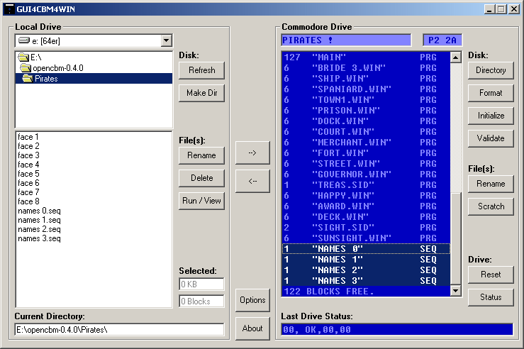
Now remove the ".seq" filename extensions from the copied files in the left GUI4CBM4WIN window. Use "64Copy" to copy those unprotected files to "pircopy1.d64"/"pircopy2.d64". Figure #10 demonstrates this for side 2.
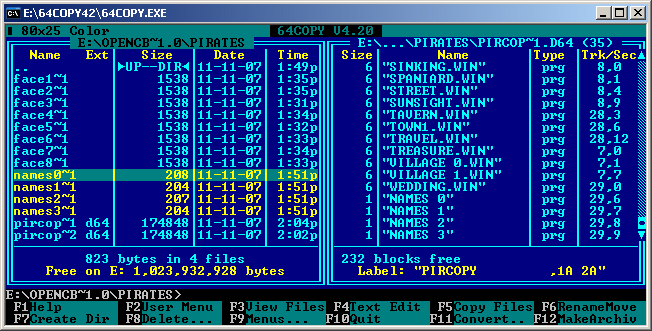
Unfortunately "NAMES 0".."NAMES 3" get the wrong filetype ("prg" instead of "seq"). So mark them, press F9 key, open "Files" menu, select "file attributes" and change their filetype to "Seq" (Figure #11 shows this).
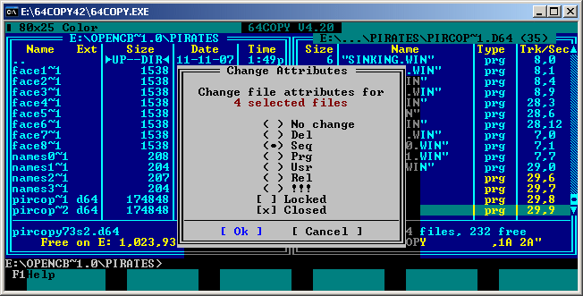
Now that we have all files in the "pircopy1.d64"/"pircopy2.d64" D64
images, we can test-drive the game with LOAD"TITLE",8,1.
(You may delete PIRCOPY73SIDE1 and PIRCOPY73SIDE2 on those images, of
course.)
Starting the game reveals it's not running correctly. Strings are
missing. As we copied all files, we must have missed some disk
area containing at least those strings. I located similar
Sector-Reading-Routines in the Basic programs "PICK" on side 1 and
"MAIN" on side 2 that seem to be strongly involved with those
strings.
We'll start with "MAIN" on side 2 now, so take a look at the
following code snippet (the "Commodore 64 User's Guide" [6] has
some Chapters on the Basic language). In "PICK" on side 1 the code
is similar and commented by REM with "LOAD T$ FROM FILE F$".
8590 GOSUB8600:T$=T$+"®":GOSUB8000:RETURN
8595 GOSUB8600:T$=T$+"®":GOSUB8005:RETURN
8600 T$=""
8610 RR=PEEK(53269):POKE53269,0:OPEN15,8,15:OPEN5,8,5,"#"
8615 PRINT#15,"B-R:";5;0;INT(FF/21)+1;FF-INT(FF/21)*21
8620 INPUT#5,F$:IFF$="CO$"THENT$=T$+CO$:GOTO8620
8622 IFF$="C$"THENT$=T$+C$:GOTO8620
8625 Z=LEN(F$):IFF$="ZZ"THENT$=T$+MID$(STR$(ZZ),2)+" ":GOTO8620
8626 IFF$="ZZ0"THENT$=T$+MID$(STR$(ZZ),2)+"0 ":GOTO8620
8630 IFST=0THENT$=T$+LEFT$(F$,Z-1)+CHR$(ASC(MID$(F$,Z))OR128):GOTO8620
8640 T$=T$+F$:CLOSE5:CLOSE15:POKE53269,RR:RETURN
OPEN15,8,15 opens the command channel,
OPEN5,8,5,"#" the data channel for random access.
The following "B-R" command reads
one block/sector of data from the disk; it is defined as follows:
PRINT#15,"B-R:" channel; drive; track; block .
When "B-R" has been performed, the
INPUT# statement can read the actual information
into the string variable F$: it reads and appends characters to the
string F$ until a RETURN code (CHR$(13)), a comma (,),
semicolon (;), or colon (:) is detected. Then special character sequences
(C$,CO$,ZZ,ZZ0) are substituted by certain game data.
ST is a reserved Basic status variable for input/output operations. The
value of ST will be nonzero if there is a problem loading something from
disk, e.g. the end of the sector was reached.
Ok now, the routine reads strings into F$ from the given sector, eventually
substitutes for game content and trims and concatenates them to T$ until
the status ST is nonzero.
You will find a detailed description on this disk operations in
"Commodore 1541 Disk Drive User's Guide" [7]: see Chapter 6 on
"RANDOM FILES" there.
The above routine is referenced very often. Simply string-search
for GOSUBs to "8590", "8595", "8600" and "8610" throughout the
Basic program and you will find out that the code is called with
Basic variable FF having values from 0 to 62. To understand the
Track/Sector calculation in the above Basic line 8615, write and run
the following 1-line Basic program. The Basic command
INT returns the integer value of an expression,
the fractional part is left off as the values are all positive.
10 FORI=0TO62:PRINT INT(I/21)+1;" ";I-INT(I/21)*21:NEXTI
It reveals that only Sectors 0-20 from Tracks 1-3 are read. So we have
to copy Tracks 1-3 somehow from the original Pirates disk side 2 to our
corresponding D64 image located on our PC. This may be a problem as some
of the files already located on our D64 image may occupy those Tracks. So
we have to create a new empty D64 image "pirates2.d64" for this.
Tracks 1-3 are also on our initial D64 images we created in Chapter 1
("side2.d64")! So we can copy them under Windows 2000/XP with
e.g. "UltraEdit 13.20" (switched to hex-mode). Track 4 starts at offset
$3F00, so simply copy+paste the first 16128 bytes (offsets $0 to $3EFF)
from "side2.d64" into our empty new D64 image "pirates2.d64".
Don't forget to mark those Tracks as "used" in the BAM! The BAM starts at
offset $16504 in the D64 images and its only job is to keep track of
which sectors on the disk are used and which are still available for use.
The following Figure #12 shows the BAM of an empty disk.
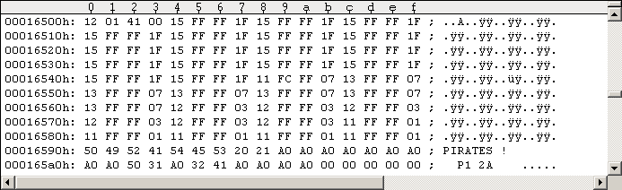
When you copied Tracks 1-3 to your image disks you must mark them as used: So zero out the entries $16504-$1650F as shown in the following Figure #13.
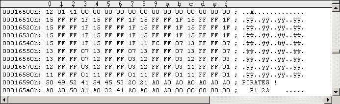
Now you can add the formerly protected and not protected files to the
D64 image "pirates2.d64" using "64Copy 4.20" (as described in Chapter 3.1),
as we're not in danger of overwriting the data in Tracks 1-3.
Ok now. Of course, we're interested in how the actual sectors and the
strings they contain look like. The following Figure #14 shows Track 1,
Sector 0.
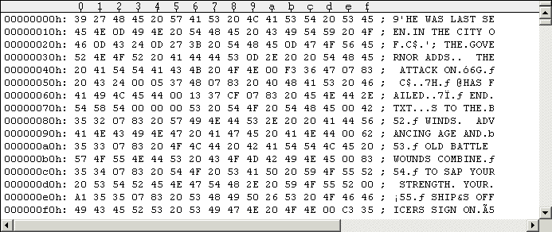
The first byte (here it's $39) shows the filling of the current sector.
Notice the strings being separated by carriage return ($0D) and semicolon
here. There's also a special character sequence "C$".
If you wish, you may overwrite all unused bytes from offset $3A to $FF
with $00 for convenience and better overview. The following Figure #15
will demonstrate this.
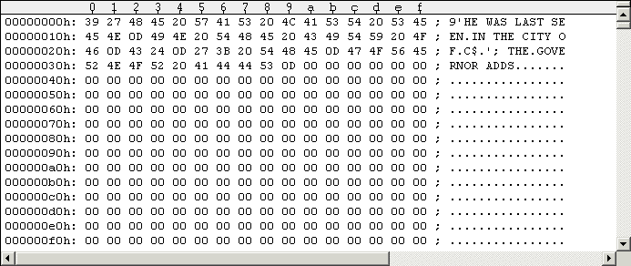
Of course, Tracks 1-3 contain 3*21=63 sectors, but this zero'ing-out
is a one-time job only. Do it. Carefully. When you fly over the strings
they're much more readable without the junk between them.
You will find details on the D64 disk layout and the BAM in
"D64 (Electronic form of a physical 1541 disk)" [1].
We'll now examine "PICK" on side 1. The situation here is different,
there's only one reference to the block-reading routine. So take a look
at the following code snippet.
1100 REM STORIES
1104 GOSUB1250:C=PEEK(PRS):IFC>16THENFORI=0TO23:READX:NEXTI:GOTO1110
1106 FORI=1TOC
1107 READX:IFX<>-1THEN1107
1108 NEXTI:GOSUB12500
1110 READAA:ZZ=ABS(AA):IFZZ=97THENGOSUB1400:GOTO1110
1111 IFABS(AA+.5)<1THENRETURN
1114 IFZZ=50THENF$="TAVERN":C1=0:C2=10:GOTO1180
1115 IFZZ=51THENF$="GOVERNOR":C1=0:C2=10:GOTO1180
1116 IFZZ=52THENF$="SHIP 4":C1=14:C2=9:GOTO1180
1117 IFZZ=53THENF$="HAPPY":C1=0:C2=10:GOTO1180
1118 IFZZ=54THENF$="MAN":C1=0:C2=10:GOTO1180
1119 IFZZ=55THENF$="YOU":C1=0:C2=10:GOTO1180
1120 X=0:Y=0:FF=ZZ-1:GOSUB8590
.
.
1130 GOTO1110
1180 IFAA<0THENGOSUB12500
1185 X=10:Y=9:GOSUB8100:GOTO1110
1189 DATA -40,41,42,-52,3,0,4,97,5,6,0,-1
1190 DATA 1,51,2,41,42,-3,53,0,4,97,5,6,0,-1
1191 DATA 7,50,8,41,42,-3,52,35,97,-53,23,0,11,12,97,5,6,-1
.
.
1205 DATA 24,51,25,41,42,-26,97,-53,27,0,28,97,29,6,-1
I'll shortly summarize what's happening. See "Chapter 5 - Bugfixes"
for a more detailed examination of the Basic code.
When you start the game, you may choose a special historical time
period: 1560, 1600, 1620, 1640, 1660 or 1680. In order of appearance
they're associated with one of the following 4-number-blocks.
1099 DATA 1,2,7,0, 4,5,6,7, 8,9,3,7, 8,10,6,7, 12,13,14,7, 15,13,11,16
E.g. 1640 is associated with the 4-number-block "8,10,6,7". If you don't
select a special time period the game chooses 1660 for you. The 4 numbers
of each block are indices for data blocks in the loaded file CHARS.DTA.
Each data block contains a string and all 4 indexed make up the options
menu where you select your nationality. Index 0 means the nationality
does not exist, so in 1560 you have only 3 nationalities to choose from.
Selecting a nationality from the options menu sets the Basic variable C
to the corresponding value of the associated 4-number-block (line 1104).
E.g. if you choose the 2nd nationality from the list in 1640, C is set
to "10" in line 1104. If you select a famous expedition, you'll get a
predefined nationality and C is set to a value of 17-22 (as there are
6 expeditions). This way the Basic variable C gets a value 0-22.
Now we'll get back to the above "STORIES" code snippet. The variable C
is set to some value 0-22 (just explained) in line 1104. If you chose a
special time period the whole data line 1099 already got skipped/passed
(I left out that code location, it's somewhere else). If you chose a famous
expedition, data line 1099 gets skipped now in line 1104.
In most cases the read-pointer for the data's now points to the first
data value in line 1189 (year 1560 is different: it points to the 4th
data value (-52), but don't care about this detail). If you didn't
select a famous expedition, the loop in lines 1106-1108 now skips a number
of C whole data-lines. For famous expeditions this code is skipped by goto
in line 1104.
There're 17 data lines from 1189-1205, I give them numbers from 0 to 16.
So the data values from line 1099 determine the index of your data line
now. Each combination of year/nationality leads to a different data line
and a famous expedition gives you index 0 (data line 1189). The read
pointer then points to the first data value of that "selected" line.
Again: the data value 0 in line 1099 is skipped as you cannot select a
corresponding nationality!
Now to the handling of the 17 data lines: There's a loop over the Basic
lines 1110-1130/1185 now. In this loop the values from the current data
line get read successively by the read-instruction in line 1110 (some data
values are skipped). The data values are passed to the known
disk-sector-reading routine (GOSUB8590 in line 1120). For data values 50-55
the sector-reading is exchanged by the known picture-loading routine
(GOSUB8100). Negative data values are always converted to positive ones
(line 1110). For data value 97 the initial sword-fight-scene is shown and
you have to fight (not in 1560). The code snippet ends by return in line
1111 when a value 0 or -1 is read from the current data line.
So by looking over all the data values you will notice the following:
for values 1-42 the corresponding disk sector is read, for values
50-55 a picture is loaded, value 97 shows the sword-fight-scene and
values 0/-1 end the code snippet.
Sectors 1-41 reside on Tracks 1-2, Sector 42 is the first on Track 3.
To keep things easy, do the same as before with disk side 2: copy the
whole Tracks 1-3 from "side1.d64" to an empty new D64 image
"pirates1.d64" and mark them as used in the BAM. After this you can
add the formerly protected and not protected files using "64Copy 4.20"
(as described in Chapter 3.1), as we're not in danger of overwriting
the data in Tracks 1-3.
You may notice that Track 1, Sector 0 contains some different data.
It's the C128 boot sector (Chapter 6 has details).
Taking a look a the copied sectors 1-42 on "pirates1.d64" reveals they
contain text strings as well. As a final step you should zero out the
junk in the copied sectors as you did on side 2 "pirates2.d64" before.
Strangely there is a text string located in sector 43 that obviously
doesn't belong to there (very last text string). I zeroed out the junk
and left the string there. The rest of the sectors on Track 3 seem to
be empty, so I left them as they are.
I located one additional "B-R" in the Basic programs "PICK" on side 1 and "MAIN" on side 2, and it's very nicely commented. So take a look at the code snippet from "PICK" in the following code window.
22000 REM GET DISK ID
22060 RR=PEEK(53269):POKE53269,0:OPEN15,8,15,"I0:":OPEN2,8,2,"#1"
22070 PRINT#15,"U1";2;0;18;0:PRINT#15,"B-P";2;163:GET#2,I$:CLOSE2:CLOSE15
22090 POKE53269,RR:RETURN
There are some references to this code in "PICK". See below.
206 GOSUB22000:IFI$<>"3"THEN205
265 GOSUB22000:IFI$<>"1"THEN250
296 GOSUB22000:IFI$<>"1"THEN295
991 GOSUB22000:IFI$<>"2"THEN990
Obviously the Disk ID is read and checked here. So be sure to set your disk ID in "pirates1.d64" to "P1" and in "pirates2.d64" to "P2" (same as on original disk). You can use "UltraEdit" for this: open the D64 images, switch to hex-mode and go to offset $165A2/$165A3. You may take a look at the last line of Figures #12 and #13: See the "P1"? The Savegame disk will automatically get "P3" when it's created (you must create a D64 image before in WinVice for this). Many Pirates versions on the Internet have a different ID on side 1 (you can't load savegames with them or end the game to get your highscore).
We have created a disk image from each Pirates disk side by now. We
copied all the files, text strings on Tracks 1-3, disk names and
IDs. While the filecopy of the protected files was in progress,
you should have noticed that there were some "shadow" files coming in:
4 files for "3DSHIPS.PIC", 5 files for "MAIN.PIC" and one "shadow" file
for each of the 6 SID files on side 2. They have to be loaded as well.
So it's necessary to insert some code somewhere for explicitly loading
those files.
Before we start off, I should tell you that I renamed the "shadow"
files: I incremented the appended numbers by 1 (e.g. "3DSHIPS.PIC1"
is now "3DSHIPS.PIC2" and so on, only "3DSHIPS.PIC" remains unchanged).
I located the code position where the "3DSHIPS.PIC" file(s) are getting loaded in the Basic program "PICK" on side 1 "pirates1.d64". The following is the original code snippet of the scene.
14025 BF=240*KP:F$="SWORD.PIC":GOSUB17800:F=240:T=208:L=16:GOSUB10:BF=240*KP
14035 F$="3DSHIPS.PIC":GOSUB17800
Variable KP has a value of $100=256d and BF holds the target address
where the file is getting loaded to by the GOSUB17800. This may be
different in your own Pirates version. Now it's a good time to hex-edit
"3DSHIPS.PIC" and its "shadow" files and write down each load address.
I used "64Copy 4.20" for this. Don't confuse the files and their
addresses.
If you divide those addresses by 256, you'll get the factor for the
calculation of BF. The factor for "3DSHIPS.PIC4" has too much numbers
after the decimal point for my liking, so I assigned the actual memory
address. The following code window shows the "updated" part of code.
14025 BF=240*KP:F$="SWORD.PIC":GOSUB17800:F=240:T=208:L=16:GOSUB10:BF=240*KP
14035 F$="3DSHIPS.PIC":GOSUB17800
14036 BF=248*KP:F$="3DSHIPS.PIC2":GOSUB17800
14037 BF=158*KP:F$="3DSHIPS.PIC3":GOSUB17800
14038 BF=40680:F$="3DSHIPS.PIC4":GOSUB17800
Ok, this one's done. Next one is "MAIN.PIC", located in the Basic code directly after the above code location. The following is the original code snippet of the scene.
14090 POKEBF+99,0:GOSUB14200:BF=236*KP:F$="MAIN.PIC":GOSUB17800
14199 RETURN
Add the load commands as we've done it before. The "updated" part of code should then look like the following.
14090 POKEBF+99,0:GOSUB14200:BF=236*KP:F$="MAIN.PIC":GOSUB17800
14092 BF=181.5*KP:F$="MAIN.PIC2":GOSUB17800
14093 BF=183*KP:F$="MAIN.PIC3":GOSUB17800
14094 BF=251.75*KP:F$="MAIN.PIC4":GOSUB17800
14095 BF=186.5*KP:F$="MAIN.PIC5":GOSUB17800
14199 RETURN
It's this easy because the last file "MAIN.PIC5" has $02DF as return
address for the $02B6 exit-routine (see screen output in Chapter 2.2).
You can save the patched file "PICK" to (another) D64 image using
SAVE"PICK",8.
Surprisingly, the game will not work correctly after applying these
patches. You will notice this when you start a new game and put in
side 2. While "MAIN" is getting loaded (not executed at this very moment!),
the information box telling you the closest cities to your
current location will not show the direction of where the cities are.
The strings with "NORTH", "SOUTH", "WEST", "EAST" and combinations
of them are missing in the text box. So what's wrong? I found out
that the file length of "PICK" is very important. Solution: Load "PICK"
into WinVice and find and remove some of the many REM code comments
(whole or parts) until you have exactly the original's file length.
You have to try and save the file some times until it's ok.
I suggest you first correct to the matching block size, then use
"64Copy 4.20" to check the filling of the last block: ALT+F4 on
"PICK" for hex-edit, then hold down F7 to scroll to the last block
(first byte here will be zero as it's the last block of the file,
second byte is the actual filling of "PICK"s last block which is $4B
in my version).
You can use "64Copy 4.20" to replace (delete+copy) the unmodified "PICK"
on your D64 image "pirates1.d64" with the patched one.
You should have noticed the 6 "shadow" files coming in while the filecopy of the protected files was in progress: One for each SID file: BATTLE, ISLAND, SCAPE, SHIPS, SIGHT, TREAS.
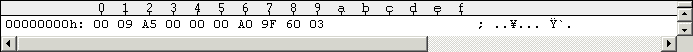
All 6 shadow files have the same content. They've all 10 bytes file length and they're all getting loaded to memory location $A5..$AA. I found out that the Basic variables A0,A1,A2,A3,A4,A5 point to this location as you may verify in the following code snippet taken from "MAIN" ($A5 = 165 decimal!).
19003 A0=165:A1=A0+1:A2=A1+1:A3=A2+1:A4=A3+1:A5=A4+1:A6=A5+1:KP=256:KK=KP*KP
19004 K=149*KP:SB=K+41:MVB=K+70:KE=K+142:S64K=K+29:M64K=K+20
From the screen output in Chapter 2.2 we know the SID files are getting loaded with return address $9528 for the $02B6 exit-routine. Remember we manipulated the return address to be $02DF to prevent autostart. So the $02B6 exit-routine should originally execute the code at $9529. The $9529 routine resides in the file "64KSUPPORT", loaded by the Basic program "TITLE". The following code window shows the disassembly of that routine.
9529 A5 A5 LDA $A5 ; variable A0=$00
952B A0 00 LDY #$00
952D A6 AA LDX $AA ; variable A5=$03
952F F0 0A BEQ $953B
9531 91 A7 STA ($A7),Y ; variable A2=$A0, A3=$9F -> $9FA0..$A29F
9533 C8 INY
9534 D0 FB BNE $9531
9536 E6 A8 INC $A8 ; variable A3=$9F
9538 CA DEX
9539 D0 F6 BNE $9531
953B A6 A9 LDX $A9 ; variable A4=$60
953D F0 06 BEQ $9545
953F 91 A7 STA ($A7),Y ; -> $A2A0..$A2FF
9541 C8 INY
9542 CA DEX
9543 D0 FA BNE $953F
9545 60 RTS
Taking a closer look at this short routine reveals it's a memory
filling function. The variables got initialized by the shadow
file. The routine takes the value at $A5 (a zero) as the filling byte.
The first loop overwrites the memory area $9FA0..$A29F with the filling
byte zero and the second loop the $A2A0..$A2FF area. In other words:
the memory at $9FA0 gets successively overwritten with $0360 zeros.
Then the function returns to the next return address on the stack.
So we have to manually clear that memory area somehow. I must admit I
took a glance at how the ESI people made it in their release (but be
careful, it's a different version of the game).
I located the code position where the SID files are getting
loaded in the Basic program "MAIN" on side 2. Here's an example.
6725 F$="BATTLE":GOSUB12900:V=23:ZV=CP:GOSUB7:DZ=0
So a routine at Basic line 12900 is called. The following is the original code snippet of the scene.
12900 F=0:T=VA/KP:L=.5:GOSUB12
12910 IFF$=SD$ORF$=""THENT=(VA+160)/KP:L=4-160/KP:GOSUB12:RETURN
12920 SD$=F$:F$=F$+".SID":BF=173.5*KP
12930 GOSUB17800:IF(ST AND191)<>0THEN12930
12940 RETURN
And the next shows the same code area, but containing the patched code in Basic line 12940 (taken from ESI release).
12900 F=0:T=VA/KP:L=.5:GOSUB12
12910 IFF$=SD$ORF$=""THENT=(VA+160)/KP:L=4-160/KP:GOSUB12:RETURN
12920 SD$=F$:F$=F$+".SID":BF=173.5*KP
12930 GOSUB17800:IF(ST AND191)<>0THEN12930
12940 F$="":GOTO12910
To understand this snippet we have to look at the routine called by GOSUB12.
12 POKEA0,F:POKEA2,FNLB(T*KP):POKEA3,T:POKEA4,FNLB(L*KP)
13 POKEA5,L:SYSSB:RETURN
I'll now shortly summarize what's going on here.
It turns out
that the line-12-routine fills the variables A0,..,A5 with supplied values
and calls the $9529 routine (we already analyzed before) using that
SYSSB: "F" = filling byte, "T" = target address, "L" =
length, "SB"=$9529 (SB was initialized in Basic line 19004, see some code
window above for that).
The GOSUB17800 instruction calls the actual file
loading routine. We have used it before in Chapter 4.1 for loading the
shadow files in "PICK".
Now to patched line 12940: By setting F$="" and
rerouting execution to line 12910 the code after the IF
instruction gets executed. It turns out that the variables T,L are
initialized to T=(VA+160)/KP=($9F00+$A0)/KP=$9FA0/KP and
L=4-160/KP=3.375 where L*KP=$0360 (KP=256). And as set
before in line 12900: F=0. Then line-12-routine is called (notice
that directly following RETURN as it "replaces" the deleted one on
line 12940).
Now compare the values! The variables A0,..,A5 are initialized with exact
the values we got from the SID's shadow files (the FNLB function simply
returns the lo-byte of a hex-value). Then the $9529 routine is called
by this SYSSB, filling the exact memory area we
need with zeros.
So the solution for the missing shadow files is simply editing Basic
line 12940: replace the original RETURN by
F$="":GOTO12910.
I suspect the Basic program "MAIN" on side 2 has the same file length problem as "PICK" on side 1. So after editing the code, we must shorten the file length somehow again. Fortunately there is a REM comment located at Basic line 3901 that can be shortened. The file lengths of the patched and original "MAIN" must be equal. I described how this is done above for the file "PICK".
You should now have 2 D64 disk images (one from each 1541 Pirates disk
side). They should contain all files, data areas, correct disk IDs and
shadow files (explicitly loaded or alternatively replaced by misdirected
flow of execution in Basic program code). A test-drive shows the game is
working now in WinVice as well as on the C64. You can use "d64copy.exe"
from "opencbm" to write the D64 images to a formatted 1541 floppy disk.
You can format a disk (and thus check if it may be faulty) on the
C64 using the command: OPEN15,8,15,"N:PIRATES!,P1":CLOSE15.
Don't use fast-format routines on old disks (e.g. the Retro Replay
Cartridge/Cyberpunx ROM's one). Give the 1541 time to magnetize the
disk correctly. If this fails, try "cbmforng.exe" from the "opencbm"
package.
It turns out that there're (at least) 2 bugs in the game, one really annoying and one being a minor typo. When you select 1640 as special historical time period and choose to be a French Privateer, then Dutch governors will always tell you they're at war with themselves. The other bug is only a mistyped letter in one of the player's initial life stories.
I located the code position where the governors tell the user about their international relationships in the Basic program "MAIN" on side 2. The following code snippet shows the relevant information of the scene.
2195 F$="SPANISH
ENGLISH FRENCH
DUTCH PIRATE ":CO$=MID$(F$,Z*8+1,1)
2196 F$=MID$(F$,Z*8+2,7)
2197 Z=LEN(F$):IFRIGHT$(F$,1)=" "THENF$=LEFT$(F$,Z-1):GOTO2197
2199 F$=F$+" ":RETURN
.
.
2295 CO$=RK$(PEEK(PRS+NN+13))+" "+NA$:RETURN
.
.
3340 AX=0:VV=VVOR1:F$="GOVERNOR":RD=14:GOSUB8098
3341 GOSUB2295:T$="%MY DEAR "+CO$+"¬":V=0:FORI=0TO3
3342 A=PRS+64+NN*4+I:IFPEEK(A)THENZ=I:GOSUB2195:IFVTHENT$=T$+"ANÄ"
3343 IFPEEK(A)=1THENT$=T$+"
WE ARE ALLIEÄWITH THE "+F$:V=VOR1
3344 IFPEEK(A)=255THENT$=T$+"
WE ARE AT WAÒWITH THE "+F$:V=VOR2
3345 NEXTI:IF(VAND2)=0ORFNEX(PRS+8+NN)<2THENT$=T$+".§":GOTO3347
3346 T$=T$+" I CHARGE YOU TO SEEËOUT AND DESTROY OUÒENEMY&S SHIPS AND TOWNS!§"
3347 IFVTHENX=2:Y=2:GOSUB8000
First, "GOVERNOR.WIN" graphics gets loaded in line 3340. The GOSUB2295
assembles the CO$ string containing the player's rank and name, so
T$ could be "MY DEAR COUNT SMITH,". Then there is this FORI=0TO3 loop
starting at the end of line 3341 and ending at line 3345. Within the loop
the Basic variable A is set to a varying value, depending on the loop
index I. When the value at memory location A is 1, the governor tells
us he is allied with some nation. If the value is 255, he tells us he
is at war with some nation. For any other value the governor simply
tells nothing. The GOSUB2195 hereby returns the nation.
So it's simply a loop over all nations, revealing the governor's
relationship to them.
The Basic variable NN is a small integer value from 0 to 3. To see this
I traced the Basic code backwards, starting from above line 3340 (checking
all GOSUB-subroutines in the way, of course). I found NN being referenced
in line 3022. Look at the following code snippet of the scene.
3000 GOSUB12500:A=CP:GOSUB2950:PRINT:PRINT" YOU HAVE ARRIVED AT THE LOVELY"
3014 IFPEEK(CP)AND64THENPRINT" INLAND VILLAGE OF "C$".":GOTO3020
3015 PRINT" SEA-SIDE TOWN OF "C$"."
3020 ZZ=PEEK(CP+4):IFZZ>1THENPRINT" "ZZ"FORTS GUARD THE HARBOR ENTRANCE."
3021 IFZZ=1THENPRINT" A FORT GUARDS THE HARBOR ENTRANCE."
3022 Z=NN:GOSUB2195:POKEPRS+25,CC
3024 PRINT" THE "CO$;F$"FLAG FLIES OVER THE TOWN."
The value of NN is used to show which nation's flag flies over the town
(line 3022). Now look at the 2195 routine: it only returns a valid
nationality string for NN being an integer value from 0 to 3.
Ok, back to our initial code location around line 3342. As PRS=148*KP,
0<=NN<=3 and 0<=I<=3, the base address for the memory location in A is
PRS+64=148*KP+$40=$9440 and the end-address is PRS+64+3*4+3=$944F.
Now we have to find the code location where this memory range gets
initialized. I found it in the Basic program "PICK" on side 1 (simply
search for "PRS+64"). So take a look at the code snippet of the scene,
especially that 1055 line.
1000 REM CHARACTER
1010 F=192:T=228:L=8:GOSUB10:BF=192*KP:F$="CHARS.DTA":GOSUB17790
1012 IFSN<0THENC=0:T(C)=PEEK(PRS):GOTO1040
1015 Z=0:GOSUB8700:IFSN>1THENFORI=5TOSN*4:READX:NEXTI
1020 FORI=1TO4:READX:T(I)=X:NEXTI
...
1025 T$="ARE YOU AN¿":FORI=1TO4:A=BF+T(I)*80-80:IFT(I)=0THEN1035
1030 T$=T$+" ":FORJ=0TO19:T$=T$+CHR$(PEEK(A+J)):NEXTJ:T$=T$+"£"
1035 NEXTI:X=10:Y=5:GOSUB8000:POKEPRS,T(C)
1040 POKE53269,0:A=BF+T(C)*80-80:FORJ=0TO12:POKEPTY+3+J,PEEK(A+20+J):NEXTJ
...
1055 FORJ=0TO15:POKEPRS+64+J,PEEK(A+56+J):NEXTJ
...
To keep this tutorial short, I'll shortly summarize again what's
going on here. Simply take "PICK"'s Basic code and start reading it
from the beginning. Identify the different option menus for user
interaction and follow the path of execution. And.. take your time.
First the file "CHARS.DTA" gets loaded to memory location BF=192*KP=$C000
in the above code (line 1010). In the following 2 lines the values of the
Basic variable SN and from the memory location PRS are used for something.
It seems we should first understand where these values come from.
If you select to command a famous expedition, you can choose between 6 of
them. There's a leading text line "SELECT AN EXPEDITION..." followed by
an empty line and 12 text lines naming the 6 expeditions (2 lines per
option). The clicked line number is stored in the Basic variable C
(values 2..13). So dividing by 2 and cutting the fractional part, we
get a value from 1 to 6 identifying the selected expedition. Adding 16,
the formula in line 170 stores a value from 17..22 into memory location
PRS. And SN is set to -1.
170 POKEPRS,INT(C/2)+16:POKEPRS+18,1:SN=-1:GOTO850
850 GOSUB1000:DY=DAY-360*INT(DAY/360):POKEPRS+19,DAY/360
The GOSUB1000 in line 850 now calls the routine we want to understand.
Very well.
There's one other path of execution using that same call in line 850.
If you select a special historical time period you have 6 possibilities
you may choose from (1560, 1600, 1620, 1640, 1660, 1680). With that
leading text line "SELECT A TIME PERIOD" the variable C gets a value
from 1 to 6. The "(C=1)" function returns -1 if C=1, else 0. So SN
can get the values 0,2,3,4,5,6 in line 810! As we detected the bug
in the year 1640, SN has the value 4. After loading the files
"CITIES 4.DTA" and "MAIN 4.DTA", our routine at line 1000 is called.
See the following code snippet for this.
810 X=2:Y=1:DC=4:GOSUB8000:SN=C+(C=1):DC=0
820 BF=CTY:F$="CITIES"+STR$(SN)+".DTA":GOSUB17790:NC=PEEK(CTY+1023)-3
825 BF=DTA:F$="MAIN"+STR$(SN)+".DTA":GOSUB17790:POKEPRS+26,SN
850 GOSUB1000:DY=DAY-360*INT(DAY/360):POKEPRS+19,DAY/360
Now we know all the possible values of the a priori questionable
variables. We can now get back to the line 1000 routine.
Looking carefully at the code, we find out that the commands in
line 1012 get executed only if we select a famous expedition. So we
can skip this line as the bug happens to come out in the special
historical time period 1640.
The GOSUB8700 in line 1015 now starts the music playback. Then some
data values are read. They reside in line 1099 as follows.
1099 DATA 1,2,7,0, 4,5,6,7, 8,9,3,7, 8,10,6,7, 12,13,14,7, 15,13,11,16
The data values in line 1099 are organized as six 4-byte-blocks. As SN=4,
three 4-byte-blocks are skipped and the data read pointer now points
to the 4th block "8,10,6,7". In line 1020 the 4 values of the
"selected" 4-byte-block are copied to the 1-dimensional Basic array
T(*). The string initialization T$="ARE YOU AN¿" tells everything we
need: The following loop (lines 1025-1035) gets the nationality text
strings from some memory locations and appends them to T$.
The bug happens when we select "FRENCH PRIVATEER" which is the third
line in the onscreen options menu (year 1640): C=2! Hence, T(C)=T(2)=10
and A=BF+T(C)*80-80=$C000+10*80-80=$C2D0 in line 1040. The loop in
line 1055 now copies 16 successive bytes from $C2D0+56=$C308 to
PRS+64=$9440 memory location!
So start the game in WinVice, select 1640 as special historical
time period and choose to be a French privateer. When you're
asked for your name, the memory copy in line 1055 already happened.
Press Alt+M to enter WinVice's monitor and enter
m 9440 944f at the monitor's command prompt. The
memory table should look as follows.
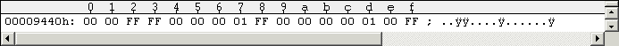
Now recall the code snippets from "MAIN" on side 2:
The value of NN in line 3342 is the governor's own nationality and it
divides the table into four 4-byte-blocks: The GOSUB2195 call in line
3022 associates NN=0 with the SPANISH ($9440..$9443), NN=1 with
the ENGLISH ($9444..$9447), NN=2 with the FRENCH ($9448..$944B)
and NN=3 with the DUTCH ($944C..$944F). The 4 values inside each block
are associated with the nationalities in the same order
(variable "I" and GOSUB2195 in line 3342); value 1 means alliance,
value 255 means war and all other values (especially zero) simply
mean no text output.
So read the table values in Figure #17: being a French Privateer
in 1640, the spanish will be at war with the french and the dutch,
the english will be allied with the dutch, the french at war with
the spanish, and the dutch allied with the english and at war with..
yes.. themselves! This list is not synchronous! The spanish are at
war with the dutch and this should be vice versa too. So we have to
edit the last 4-byte-block (the dutch): exchange the $FF at position
$944F with the $00 at position $944C. The memory table at $9440
should now look as follows.
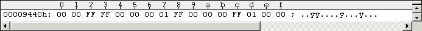
Now we have to fix this bug in the file "CHARS.DTA". Start "64Copy 4.20", open "pirates1.d64" and press ALT+F4 on "CHARS.DTA" to hex-edit it. The above $9440-table is obviously located at file offset $C308-$C000=$308 but this doesn't help because of the sector interleave. So simply search for the string "FRENCH PRIVATEER" using F7/F8 keys to navigate sector by sector through the file. The table we search resides 56 bytes after the beginning of that string. Unfortunately the French privateer block extends over 2 disk sectors, so the double-line indicates the sector change in the following Figure #19.
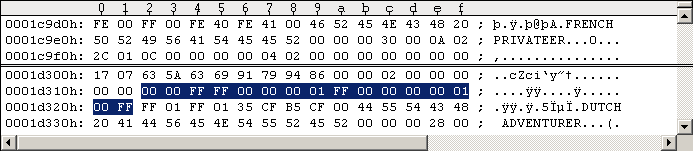
So fix it as shown in the following Figure #20 (F4 key to hex-edit and finally ESC key to finish).
Figure #20: Fixed CHARS.DTA at the questionable file position (double line indicating sector interleave).
I quickly checked the other tables and found no further problems. So
start a game as French Privateer in 1640 and visit a dutch governor..
Our bugfix is working!
I've seen quite some Pirates versions so far, as I stated in the
introduction. All of this versions have this bug! How could it go
undetected for years back in the 1980s?
I found a typo in a certain player's "life story" located in Sector #36 (sector number taken from data lines 1189-1205 in "PICK"), "pirates1.d64" file offset $243F.
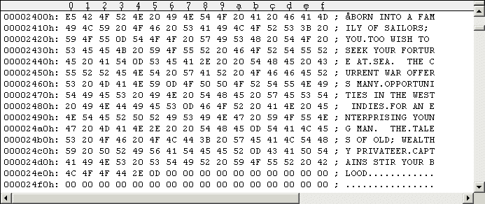
Simply correct the word "FORTURE" to be "FORTUNE": Open "pirates1.d64" with "UltraEdit" in hex-mode, scroll to offset $2400 (Sector #36 begins there) and correct it at offset $243F. That's it.
The original game comes around with an autostart, we lost it when
we removed the Rapidlok protection. We will add an autostart code
to the game in this Chapter, so you don't have to type
RUN anymore. This also applies to C128 users:
Although we copied the C128 boot sector (Track 1, Sector 0), it only
loads the file "TITLE" into memory and the user has to manually
enter RUN afterwards. Even the ESI version has an
autostart.
I must admit I looked at the ESI version again for inspiration. The idea
is as follows: When you type a simple LOAD"TITLE",8,1,
some Kernal routines will be called. The "last one" in the chain
is the standard Kernal file loading routine $FFD5 which actually loads
the wanted file to its predefined memory load address.
Each time a new Kernal (sub-)routine is called in the above chain, a
return address is put on the stack (for later return). I.e. if the above
"TITLE" got loaded, the $FFD5 routine will return to its calling
routine. We will "intercept" this last return and change the return
address to point to our own routine.
The stack is located at $01FF, decreasing to $0100. So if we load
our program to $0100 and overwrite the whole $01xx range with $02, all
return addresses change to $0202(+1). Hence, when $FFD5 completes
the file load, it will "return" to $0203 (regardless of stack pointer
register value) and the code there gets executed! The following is a
memory dump of the file accomplishing this ($0100-$0238).
0100 02 02 02 02 02 02 02 02 02 02 02 02 02 02 02 02 ................
0110 02 02 02 02 02 02 02 02 02 02 02 02 02 02 02 02 ................
0120 02 02 02 02 02 02 02 02 02 02 02 02 02 02 02 02 ................
0130 02 02 02 02 02 02 02 02 02 02 02 02 02 02 02 02 ................
0140 02 02 02 02 02 02 02 02 02 02 02 02 02 02 02 02 ................
0150 02 02 02 02 02 02 02 02 02 02 02 02 02 02 02 02 ................
0160 02 02 02 02 02 02 02 02 02 02 02 02 02 02 02 02 ................
0170 02 02 02 02 02 02 02 02 02 02 02 02 02 02 02 02 ................
0180 02 02 02 02 02 02 02 02 02 02 02 02 02 02 02 02 ................
0190 02 02 02 02 02 02 02 02 02 02 02 02 02 02 02 02 ................
01A0 02 02 02 02 02 02 02 02 02 02 02 02 02 02 02 02 ................
01B0 02 02 02 02 02 02 02 02 02 02 02 02 02 02 02 02 ................
01C0 02 02 02 02 02 02 02 02 02 02 02 02 02 02 02 02 ................
01D0 02 02 02 02 02 02 02 02 02 02 02 02 02 02 02 02 ................
01E0 02 02 02 02 02 02 02 02 02 02 02 02 02 02 02 02 ................
01F0 02 02 02 02 02 02 02 02 02 02 02 02 02 02 02 02 ................
0200 02 02 02 A9 08 A8 AA 20 BA FF A9 05 A2 31 A0 02 ...©.¨ª º.©.¢1 .
0210 20 BD FF A9 00 85 9D 20 D5 FF 86 2D 84 2E A9 08 ½.©... Õ..-..©.
0220 20 C3 FF A2 FF 9A A9 02 85 7B A9 36 85 7A 6C 08 Ã.¢..©...©6....
0230 03 54 49 54 4C 45 00 8A 00 00 00 00 00 00 00 00 .TITLE..........
We don't want to meddle with the Basic program "TITLE" which gets loaded
to $0801. We'll add a selfmade file "PIRATES" to the disk. It has to be
the first file on the disk, so it will be targeted by
LOAD"*",8,1.
What we do at $0203 is clear: we load "TITLE" into memory and execute
it. The following is the disassembly of the code.
0203 A9 08 LDA #$08 ; our file number: #8
0205 A8 TAY
0206 AA TAX ; drive 8
0207 20 BA FF JSR $FFBA ; SETLFS
020A A9 05 LDA #$05 ; len("TITLE")=5
020C A2 31 LDX #$31 ; lo(@"TITLE")
020E A0 02 LDY #$02 ; hi(@"TITLE")
0210 20 BD FF JSR $FFBD ; SETNAM
0213 A9 00 LDA #$00 ;
0215 85 9D STA $9D ; no Kernal text output to screen during load
0217 20 D5 FF JSR $FFD5 ; Load RAM From Device
021A 86 2D STX $2D ; $2D/$2E = Pointer: Start of BASIC Variables
021C 84 2E STY $2E ; -> will be located right after the loaded file
021E A9 08 LDA #$08
0220 20 C3 FF JSR $FFC3 ; CLOSE #8
0223 A2 FF LDX #$FF
0225 9A TXS ; reset stack pointer
0226 A9 02 LDA #$02 ;
0228 85 7B STA $7B ; $7A/$7B = Pointer: Current Byte of BASIC Text
022A A9 36 LDA #$36 ; -> $0236(+1)
022C 85 7A STA $7A ;
022E 6C 08 03 JMP ($0308) ; Vector: BASIC Character dispatch Routine
0231 "TITLE" ; filename to be loaded
0237 8A 00 ; Basic token: $8A=RUN
The actual file load (instructions $0203-$0222) happens as before,
the $0223/$0225 instructions reset the hopelessly corrupted stack
to start again from $01FF. To start the Basic program we just
loaded ("TITLE"), I took ripped the code from
Rapidlok's $02B6 exit-routine #2 (analyzed in Chapter 1):
Set $7A/$7B (Pointer: Current Byte of BASIC Text) to point to $0237,
where the Basic token $8A=RUN resides. Then jump to the $0308 vector
(Vector: BASIC Character dispatch Routine) to start execution.
The game autostarts now when you type LOAD"*",8,1 or
LOAD"PIRATES",8,1. Of course, you may always run the
game as before using LOAD"TITLE",8,1 (and then typing
RUN).
When you have a C128 you can put your original Pirates disk (side 1) into your 1571 drive, turn the power on and the game autostarts (i.e. "TITLE" gets loaded). There's a boot sector located on Track 1, Sector 0 being loaded by a system call to the $FF53 "BOOT CALL" routine. But we want to make sure our selfmade "PIRATES" is loaded (and autostarted), and not "TITLE" (as it no longer has the autostart). The following Figure #22 is a hex-dump of the boot sector.
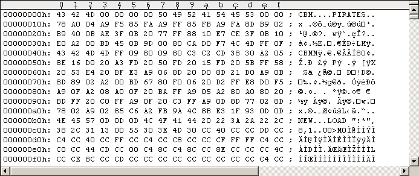
C128 boot sectors have a special structure, the "Commodore 128 - Programmer's Reference Guide" [12] has details. The following window gives a short overview of the situation.
$00 -> CBM ; key
$03 -> $00,$00,$00,$00 ; no other boot sector
$07 -> PIRATES,$00 ; printout message "BOOTING PIRATES..."
$0F -> $00 ; no filename
$10 -> $78,$A0,$04,... ; program code
The boot sector gets loaded to memory location $0B00. When the printout message was printed to the screen, the program code at $0B10 gets executed (the start address depends on the length of the message and the filename). The following Figure #23 shows the disassembly.
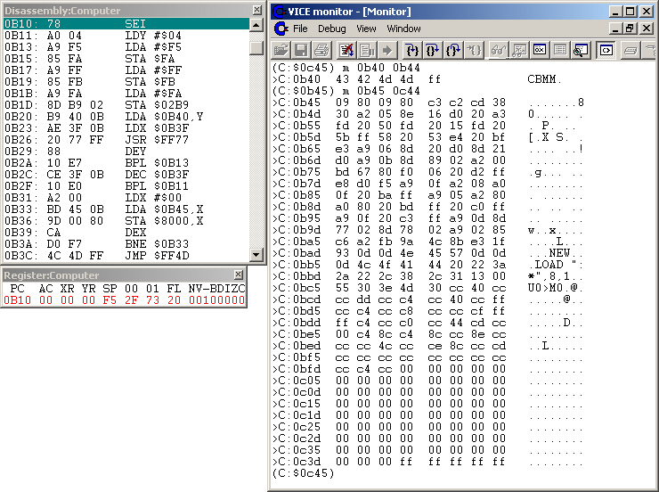
First interrupts have to be disabled for the following (SEI command at
$0B10). The $0B11-$0B30 loop copies "CBM"+$4D+$FF" to the memory range
$FFF5-$FFF9 of all Banks 0-15 (using the $FF77 indirect STA). "CBM" is
the signature showing that the SYSTEM vector at $FFF8 in all memory banks
is now a valid pointer to $FF4D. The $FF4D routine switches the C128 to
C64 mode and exits via an indirect jump through the C64 $FFFC Reset
vector (default target is $FCE2). So from now on the C128 automatically
switches to C64 mode through the $FF4D routine when we press Reset
(warm start). I really don't know what it's good for as we won't
press Reset.
Next is the $0B31-$0B3A loop: it copies "our code" (and some memory
bytes from behind it) from $0B45-$0C44 to $8000-$80FF memory location.
The memory range $8000-$9FFF is known as "Optional Cartridge ROM
space".
The final jump to the $FF4D routine sets the C64 mode and (as already
stated) executes the C64's $FCE2 routine. So take a look at the
following $FCE2 Kernal disassembly (Kernal disassemblies taken from
"AAY64 - All_About_Your_64 - Online Help" [3]).
C64 Kernal Routine $FCE2: Power-Up RESET Entry
FCE2: A2 FF LDX #$FF
FCE4: 78 SEI
FCE5: 9A TXS
FCE6: D8 CLD
FCE7: 20 02 FD JSR $FD02 ; Check For 8-ROM
FCEA: D0 03 BNE $FCEF
FCEC: 6C 00 80 JMP ($8000)
FCEF: 8E 16 D0 STX $D016 ; VIC: Control Register 2
FCF2: 20 A3 FD JSR $FDA3 ; Initialise I/O
FCF5: 20 50 FD JSR $FD50 ; Initialise System Constants
FCF8: 20 15 FD JSR $FD15 ; Restore Kernal Vectors
FCFB: 20 5B FF JSR $FF5B ; Initialize screen editor
FCFE: 58 CLI
FCFF: 6C 00 A0 JMP ($A000) ; Restart Vectors, [$A000]=$E394
As the last jump goes to $E394, we look at the disassembly of that Kernal routine too.
C64 Kernal Routine $E394: BASIC Cold Start
E394: 20 53 E4 JSR $E453 ; Initialize Vectors
E397: 20 BF E3 JSR $E3BF ; Initialize BASIC RAM
E39A: 20 22 E4 JSR $E422 ; Output Power-Up Message
E39D: A2 FB LDX #$FB
E39F: 9A TXS
E3A0: D0 E4 BNE $E386 ; BASIC Warm Start [RUNSTOP-RESTORE]
You may want to check the paragraph on "KERNAL POWER-UP ACTIVITIES" in "Commodore 64 Programmer's Reference Guide" [5]. The $FD02 routine checks for the presence of an autostart ROM cartridge at location $8000: $8004-$8008 must be the signature "CBM80" (bit 7 set on letters). Location $8000/$8001 is the Cold Start vector and $8002/$8003 the Warm Start vector, both are set to $8009 in our case and the signature is also ok. So the "cartridge code" at [$8000]=$8009 gets automatically executed (see the following Figure #24 for the disassembly).
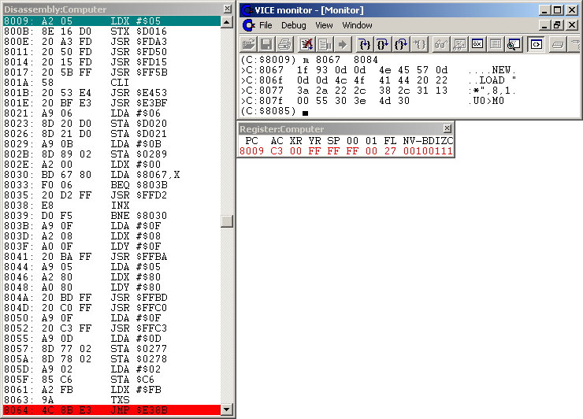
So what's going on here? Of course, we need the normal initialization
calls as if no cartridge would be there. When no cartridge is detected,
$FD02 should return with register value X=5. So the sequence of commands
at $8009-$8020 and $8061-$8063 is the same as in the Kernal routines
$FCE2 and $E394 above (ok, we don't need the "Output Power-Up Message"
and the "BASIC Warm Start"). That much to the initializations.
The $D020/$D021 instructions set the border and background color
to blue (=6), and $0289 ("Maximum number of Bytes in Keyboard Buffer")
is set to 12. Then $802E-$803A loop copies some command sequences to
the screen using the $FFD2 CHROUT routine. First is $1F,$93,$0D,$0D,
where $1F is the code for immediately changing the text output color
to blue (so from now on it's blue text output on blue background),
$93=147 immediately clears the screen and the $0D's are simple
carriage returns. The second command sequence is "NEW", followed by
three $0D's. The third sequence is "LOAD ":*",8,1" followed by $00,
so the screen output stops. The following Figure #25 visualizes the
scene (I changed the text and border color to light blue for your
convenience).
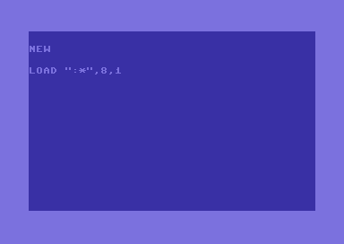
Next commands between $803B-$8054 can be summarized by "OPEN15,8,15,"U0>M0":CLOSE15", which sets the 1571 drive to 1541 mode. Then two $0D's are placed into "Keyboard Buffer Queue (FIFO)" ($0278/$0279), and this fact is told the C64 by setting the $C6 value ("Number of Characters in Keyboard Buffer queue") to 2. The final JMP $E38B goes into the middle of the Kernal routine $E37B (see following disassembly).
C64 Kernal Routine $E37B: BASIC Warm Start [RUNSTOP-RESTORE]
E37B: 20 CC FF JSR $FFCC ; Restore I/O Vector
E37E: A9 00 LDA #$00
E380: 85 13 STA $13 ; File number of current Input Device
E382: 20 7A A6 JSR $A67A ; Perform [clr]
E385: 58 CLI
E386: A2 80 LDX #$80
E388: 6C 00 03 JMP ($0300) ; Vector: BASIC Error Message
E38B: 8A TXA
E38C: 30 03 BMI $E391
E38E: 4C 3A A4 JMP $A43A ; Error Routine
E391: 4C 74 A4 JMP $A474 ; Restart BASIC
There's only a minor difference in the two flows of execution, because
"our" routine branches to $E38B on exit and the $E394 Kernal routine
to $E386 (the $0300 vector points to $E38B). So the register values
of A,X are different: $FB in "our" flow of execution and $80 in the
Kernal one. But in both values the highest bit is set to 1 - so the
BMI $E391 branches. When you trace the $A474 "Restart BASIC" routine,
you will see that both register values get overwritten by immediates,
so the actual register values are unimportant.
As the Basic interpreter loop gets started by the JMP $A474, our
"NEW" and "LOAD ":*",8,1" get read and executed. This means the first
file on the disk will be loaded. On the original Pirates disk, "TITLE"
was the first file and it was autostarted by the $02E0-RTS in the
fastloader's exit-routine. In our case "PIRATES" is the first file
and it will get autostarted because we designed it that way. That's
what we wanted to make sure.
The following Figure #26 shows the executed text output of the boot
code (text and border color again changed to light blue for your
convenience).
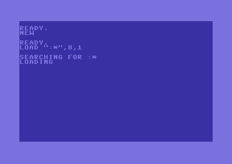
The "EPROM Programmers Handbook for the C64 and C128" [20], Chapter
1.8 "Autostart Cartridges" has further interesting details.
If you assemble a new Pirates (side 1) image, don't forget to first
copy Tracks 1-3 and mark them as used in the BAM. Then the first file
you copy to that image must be the autostart file "PIRATES".
The previous Chapters explained in detail how to make a clean
backup image of Pirates. So refer to them when following this short
summary which will quickly guide you step by step through the image
making.
Step 0: Make sure you have the necessary hard- and software:
- C64 (PAL or NTSC),
- two 1541 drives (one drive ID set to 8, the other set to 9,
both connected to each other and the C64 by the usual serial cables),
- two 5.25" formatted working disks (label them "A" and "B"),
- XA1541 or XAP1541 cable for PC<->1541 connection (other cables may
also work),
- "64Copy 4.20" for Windows (Norton Commander like file handling tool
for D64 images),
- "opencbm 0.4.0" for Windows (1541 Windows driver and utilities),
- "GUI4CBM4WIN 0.4.1" for "opencbm 0.4.0" (nice graphical Windows application),
- "nibtools 0.5.1" for Windows (copy program - only if you have a XAP1541
parallel cable and 1541 with parallel port),
- "WinVice 1.22" for Windows (C64-emulator),
- "UltraEdit 13.20" for Windows (text/hex editor).
Step 1: Connect your 1541 drive (ID 8) to your Windows PC
using the parallel XAP1541 cable [choice (A)] or XA1541 cable
[choice (B)] (turn them off before connecting!). Run
instcbm.exe from the opencbm package to install the Windows
driver.
Step 2: Copy both sides of your original Pirates disk into D64
files on your PC: Open a Windows command shell (cmd.exe) and type in:
(A)
nibread -E36 side1.nib to copy and nibconv side1.nib side1.d64
to convert to D64 format (same with side 2).
(B)
d64copy -e 3 8 side1.d64 to copy Tracks 1-3 and
d64copy -s 18 -e 18 8 side1.d64 for Track 18 (same with side 2).
Step 3: Prepare the working disks for the C64 - Use opencbm's
"d64copy.exe" to copy the supplied copy program to the working disks:
insert working disk A into the 1541 drive and enter
d64copy pircopy73.d64 8 at the Windows command
shell prompt (same with working disk B).
Step 4: Run instcbm -r to de-install the
Windows driver. Connect both 1541 drives to your C64 using the usual
serial cables. Restart the C64 (turn power off and on).
Step 5: Insert your original Pirates disk side 1 into drive 8 and
the prepared working disk A into drive 9. Load and run our copy program:
LOAD"PIRCOPY73SIDE1",9,1 and then
SYS2600 to start the copy process. (Do the same with
Pirates disk side 2, working disk B and "PIRCOPY73SIDE2".)
Step 6: Connect your 1541 drive with ID 8 to your Windows PC again
(turn them off before connecting!) and run
instcbm.exe.
Copy both working disks to your Windows PC:
d64copy 8 workA.d64 (same with working disk B).
Step 7: Copy the not protected files:
(A) Use "64Copy" to copy the not protected files
"FACE 1".."FACE 8" from "side1.d64" to "workA.d64" and "NAMES 0".."NAMES 3"
from "side2.d64" to "workB.d64".
(B) Insert your original Pirates disk and use "GUI4CBM4WIN"
to copy "FACE 1".."FACE 8" from side 1 and "NAMES 0".."NAMES 3" from
side 2 to your Windows PC filesystem. Remove all filename extensions
(e.g. rename "NAMES 0.seq" to "NAMES 0"). Use "64Copy" to copy the
files to the corresponding
"workA.d64"/"workB.d64" and change the file attributes of
"NAMES 0".."NAMES 3" from "prg" to "seq" in "workB.d64".
Run instcbm -r to de-install the Windows driver.
Step 8: Apply the patches to "PICK" and "MAIN" (shadow files),
fix their filesizes and apply the bugfixes ("CHARS.DTA" and typo on Track 2)
to "workA.d64" and "workB.d64".
Step 9: Use "WinVice" to create two clean D64 images named
"pirates1.d64" and "pirates2.d64".
Step 10: Use "UltraEdit" to copy Tracks 1-3 from "side1.d64" to
"pirates1.d64" and mark them as used in the BAMs. Set ID + Disk name.
(Same with side 2.)
Step 11: Use "64Copy" to copy all files from "workA.d64"
to "pirates1.d64" starting with the supplied autostart file "PIRATES"
(same with side 2, but not "PIRATES" of course).
Step 12: Run the game in WinVice!
Optional steps:
Step 13: Clean the Tracks 1-3 on "pirates1.d64" and "pirates2.d64".
Step 14: Play the game on your C64:
Connect your 1541 drive (ID 8) to your Windows PC again (turn them
off before connecting!) and run instcbm.exe.
Insert an empty disk and transfer the game using
d64copy pirates1.d64 8 (same with side 2).
Run instcbm -r to de-install the Windows driver.
Connect the 1541 drive to your C64 as the only drive.
Type LOAD"*",8,1 or LOAD"PIRATES",8,1
at your C64's command prompt to start the game.
Step 15: Send greetings to me!
Troubleshooting:
- Did you turn the C64 off before running the pircopys?
- Make sure all protected files on your original Pirates disk are in
the pircopy file lists.
- Do the nibread logfiles from step (2A) show any errors (in addition to
known ones)? This may indicate that your Pirates disk is faulty.
- Use RetroReplay Cartridge with Cyberpunx ROM (with $DD00 bugfix)
to check if the injector addresses are all ok:
Insert endless loops into the pircopys and freeze on these to check if
the injection code is copied to the correct locations. Check our address
stack for problems.
- Use RetroReplay Cartridge with Cyberpunx ROM (with $DD00 bugfix)
to check if the PAL/NTSC detection and injected opcodes are ok. Are the
pircopys injecting the correct opcodes to the correct location?
- Are your formatted working disks 100% ok? Double and triple check this!!
- Remove all additional hardware from your C64 (cartridges, fastloader ROMs,
etc.).
In this tutorial we learned how to make a clean backup copy of
the 1541 disk version of Pirates. The Rapidlok copy protection
(including the fastloader) is completely removed from the game
now. Our backup copy is working in WinVice (D64 images) as well as
on the C64 (both PAL and NTSC). And - at least my one - has a newer
version number than the ESI one.
We understood in detail how the (Rapidlok) fastloader works on the
C64 side and exploited this knowledge to write a code injector for
grabbing the boundary memory addresses and return addresses of files
getting fast-loaded into memory. The detection and handling of
PAL/NTSC timing was no problem for us. By writing a filecopy routine
that loops over a number of filenames, we could load all protected
files with the activated Injector from drive 8 and afterwards save
them to drive 9 using the grabbed memory address information. You
only have to make sure all protected files on your original disk are
listed in the filename lists. We also found and copied the missing
parts: the unprotected files, Tracks 1-3 containing the strings
and the original disk names and IDs. And we found solutions for
the shadow files: we added explicit load instructions to the Basic
programs or alternatively replaced them by Basic program code.
Then we fixed 2 bugs. The typo was very easy, but we had to dig
into the Basic program codes and understand some memory
organization for the other, annoying one. Finally we added an own
file for autostarting the game and made sure it's compatible with
the C128 boot sector.
It took quite some time to understand, work out the details, get
everything to run and explain it afterwards. But the whole time it
was very interesting and I enjoyed to see and follow the footsteps
of the legendary Sid Meier.
I gladly receive comments. I would happily add some excellent
paragraph on why exactly the file lengths are so important - or why not.
Check the next tutorial [22] for an analysis of the Rapidlok code
running inside the 1541 drive.
Greetings
BanGuiBob
I included the following 8
D64 images (198 Kb):
The clean Pirates disk image for instant playing:
pirates_game_v132x02_pal_ntsc_side1.d64
pirates_game_v132x02_pal_ntsc_side2.d64
Images from the original Pirates disk (PAL+NTSC versions!):
pirates_original_image_v132x02_ntsc_side1.d64
pirates_original_image_v132x02_ntsc_side2.d64
pirates_original_image_v132x02_pal_side1.d64
pirates_original_image_v132x02_pal_side2.d64
Our developed copy program (for both disk sides):
pircopy73.d64
The original versions of all files we modified or left out:
addons.d64
For playing the game you will need the dates for the treasure fleet
and the silver train. I did not include them as you will find them
in the "Pirates! manual" [13].
I used and recommend the following literature (all downloadable
as text, html or PDF from the Internet).
[1] "D64 (Electronic form of a physical 1541 disk)", Document rev. 1.9,
updated: March 11, 2004. Contributors/sources: "Inside Commodore DOS"
(R. Immers, G. Neufeld), W. Moser.
[2] "Inside Commodore DOS", R. Immers, G. Neufeld.
Datamost Inc., 1984, ISBN: 0-8359-3091-2.
[3] AAY64 - All_About_Your_64 - Online Help v0.64, (c) 1995-2005
Ninja/The Dreams.
[4] AAY1541 - All_About_Your_1541 - Online Help v0.23, (c) 1995-2006
Ninja/The Dreams.
[5] "Commodore 64 Programmer's Reference Guide", 1st Edition,
Commodore Business Machines Inc., 1982.
Available as The Project 64 etext #46, "C64PRG10.TXT"/"C64PRG10.ZIP", June 1996.
[6] "Commodore 64 User's Guide", 2nd Edition,
Commodore Business Machines Inc., 1984.
Available as The Project 64 etext #251, "C64UG210.TXT"/"C64UG210.ZIP", June 1997.
[7] "Commodore 1541 Disk Drive User's Guide",
Commodore Business Machines Electronics Ltd., September 1982.
Available as The Project 64 etext #7, "1541D10A.TXT"/"1541D10A.ZIP", January 1996.
[8] "Direkte Programmierung der Floppy 1541" (german), N. Heusler.
Available as The International Project 64 etext #10, "1541JDE1.TXT", June 1997.
Original source: 64'er Magazin, volume 12/1993.
[9] "Kracker Jax Revealed Trilogy", Books I II III, by KJPB, 1990.
[10] CyberpunX Retro Replay (BETA) Extended Manual. By Count Zero.
[11] "Machine Language for the Commodore 64 and Other Commodore
Computers", J. Butterfield. Brady Communications Company Inc., 1984.
ISBN: 0-89303-652-8. Converted to etext for free public distribution by
D. Holz, "MLC64.TXT"/"MLC64.ZIP".
[12] "Commodore 128 - Programmer's Reference Guide",
Commodore Business Machines Inc., 1986. ISBN: 0-553-34292-4.
[13] "Pirates! manual". Original game manual, available as
The Project 64 etext #356, "PIRATE20.TXT"/"PIRATE20.ZIP", May 1998.
[14] "Game of The Week: Pirates!", game review by M. Wiesner, ClassicGaming.com
[15] "2-bit transfer protocol in an IRQ-loader", Lasse Öörni.
[16] "Bits der Reihe nach (Thema: serieller Bus, Programmierung
der 1541)" (german), N. Heusler.
Available as The International Project 64 etext #13, "SER_DE1.TXT", June 1997.
Original source: 64'er Magazin, volume 01/1994.
[17] "Rasters - What They Are and How to Use Them", B. Vrieling,
"C=Hacking" net magazine, issue 3, 15-Jul-1992.
[18] "Making stable raster routines (C64 and VIC-20)", M. Makela,
"C=Hacking" net magazine, issue 10, 30-Jun-1995.
[19] "A reliable PAL/NTSC check!", W. Sang (Ninja/The Dreams).
[20] "EPROM Programmers Handbook for the C64 and C128", B. Mellon,
CSM Software Inc., 1985.
[21] "Floppyprogrammierung - von (A)ssembler bis (B)asic" (german),
J. Brokamp, H. Beiler. 64'er Magazin, volume 06/1994.
[22] "The RapidLok6 Handbook v1.1", BanGuiBob, 2007-2009.